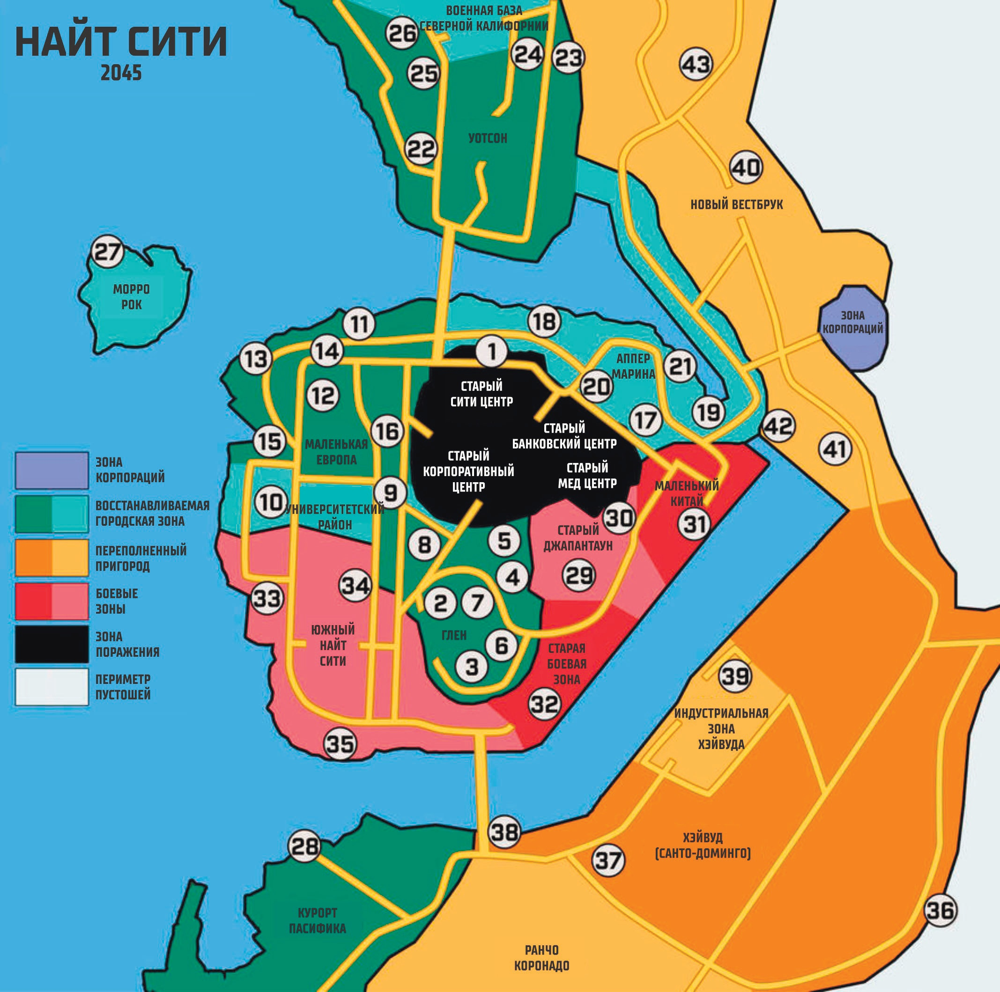
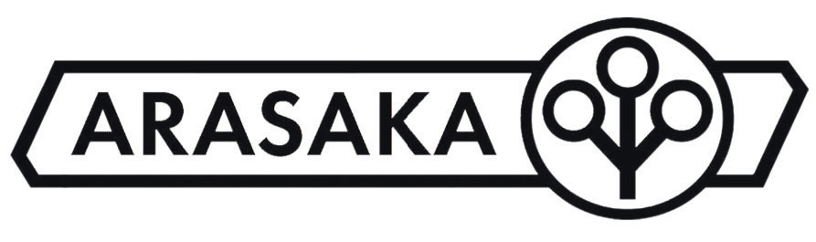
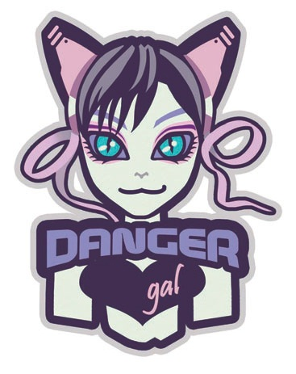
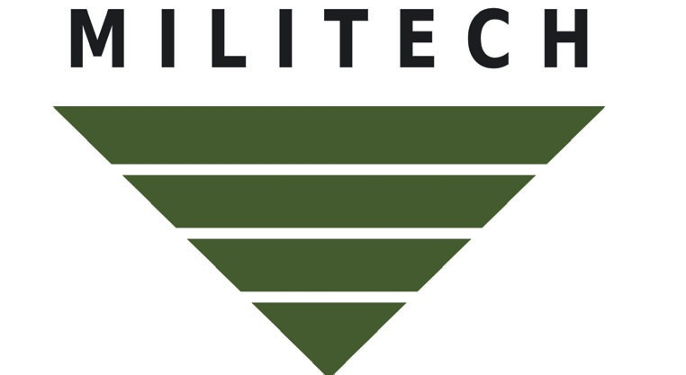
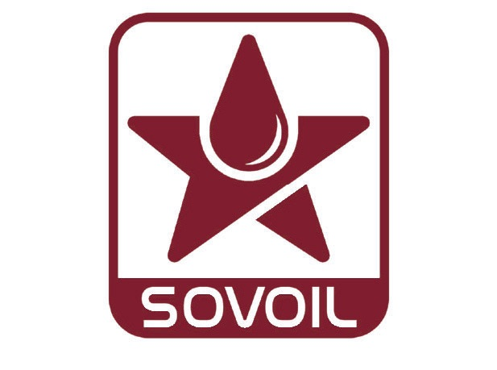
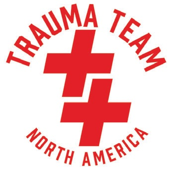
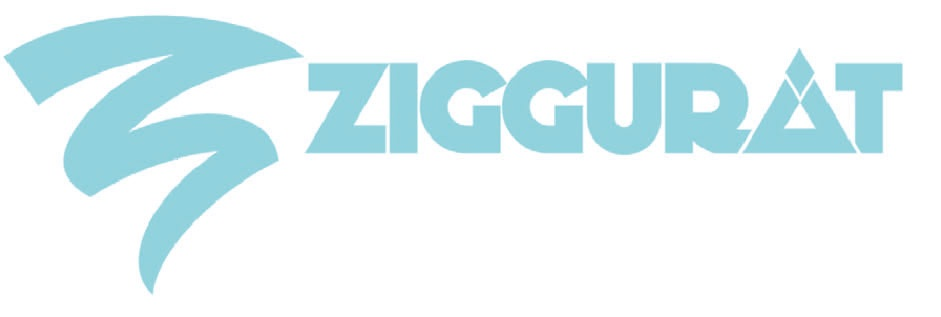

Найт-сити в Красное Время
Сегодня, как и во времена моего старика, жизнь в Найт-Сити зависит от того, ГДЕ вы находитесь. Соседние районы и зоны дико варьируются в зависимости от того, какая фракция/ банда/корпорация КОНТРОЛИРУЕТ район, и даже тогда условия могут измениться в одно мгновение. Но в целом, семь зон теперь практически полностью ОПРЕДЕЛЯЕТ весь Найт-Сити
— ТРЕЙС САНТЬЯГО
Найт Сити — это город, находящийся в процессе перестройки даже сейчас. Старые соседские зоны периода 2020 года были перестроены, переименованы или даже сброшены в залив, если они слишком радиоактивны. Вместо соседских районов местные жители теперь называют эти новые зоны в зависимости от типа окружающей среды, которая в них преобладает: Зона поражения, Перестраивающийся городской центр, Корпоративная зона, Переполненные пригороды, Периметр пустошей и Открытая дорога.
| Тип Зоны | Описание |
| Зона поражения | Район, наиболее пострадавший от ядерного взрыва в Найт-Сити, представляет собой опасную местность, полную разрушенных, искореженных небоскребов, сгоревших автомобилей и погребенных тел неудачливых людей. |
| Востанавл. Городской Центр | Это те части города, которые избежали худших последствий войны и бомбардировок. В Центре восстановления повсюду краны и строительная техника, возводящие новые корпоративные башни и многолюдные городские мегабашни. |
| Корпоративная Зона | Это особый район города, который был оцеплен и закрыт только для высокопоставленных руководителей корпораций и членов их семей. |
| Боевая Зона | Самая опасная и беззаконная часть города, выросшая из зоны боёв по время и после 4-й корпоративной войны. Единственное правосудие здесь вершится под дулом пистолета. |
| Переполненные Пригороды | Это место на грани катастрофы, где когда-то стояли безопасные и надежные Бивервилли, заполнено разросшимися палаточными городками и нерегулируемыми лагерями беженцев, переполненными переселенцами войны. |
| Периметр Пустошей | Это территория за пределами разросшегося Города. На краю беззакония, за исключением районов, контролируемых семьями кочевников. |
| Открытая Дорога | Шоссе, населенное только людьми в транспорте или бродячими бустерами на шипастых машинах и мотоциклах. |
В дополнение к переименованию города, каждому новому району городской совет присвоил рейтинг угрозы: это обозначение того, насколько опасен район и какие угрозы могут там встретиться. Подробнее об этих рейтингах угроз вы можете узнать ниже.
Рейтинг Угроз
В Найт-Сити рейтинг угроз используется для характеристики вооруженных противников и уровней общей опасности, с которыми можно столкнуться в основных районах города. Вот краткая информация о каждом из них:
| Рейтинг угрозы | Описание |
| Административный | Охраняемый закрытый район только для ультра-богатых и влиятельных людей, живущих там, играя в гольф и теннис под защитой вооруженной охраны. Он соединен с городским центром с помощью маглева, чтобы ездить на работу. |
| Корпоративный | Это части города, патрулируемые корпоративной охраной, которые находятся в отдалении от резни в Эоне боевых действий. Однако и там есть своя опасность. Опасность с гораздо более высоким бюджетом. |
| Умеренный | Это части города, выходящие за пределы Корпоративных зон, где живут люди, которые не могут позволить себе жить внутри Корпоративных зон. Жизнь там в относительной безопасности... ну по сравнению с бойней в Боевых зонах. К сожалению, эта бойня иногда просачивается в Умеренные зоны. |
| Боевые | Это самые худшие места в городе, где гибнут люди, и никто не убирает тела. |
| Окраины | Это территория за пределами городской черты. Единственные законы здесь — те, которые вы устанавливаете для себя сами. Скорее всего, вы столкнетесь здесь только с дорожными бандитами и кочевниками. |
Обратите внимание, хоть большая часть региона может соответствовать определенному рейтингу угрозы, это не означает, что в регионе могут отсутствовать другие угрозы в рамках и рядом с основной классификацией. Район, находящийся в процессе реконструкции или благоустройства, может иметь несколько рейтингов угроз или даже переходить от одноготипа рейтинга кдругому.
Помните идею с картой сокровищ?
Зона Поражения
Рейтинг угрозы: Боевой
Это район, который раньше был центральной корпоративной зоной города. Хотя большая часть этой территории была снесена бульдозером в залив в качестве насыпи, оставшаяся часть все еще представляет собой призрачный пейзаж из разрушенных, искореженных небоскребов, сгоревших автомобилей и замурованных тел неудачников. Хотя радиация уже уменьшилась, она все еще присутствует, и большинство людей покинуло этот район в угоду худшим из банд. Если вы попали сюда, то, скорее всего, вы либо бандит, либо самоубийца, либо приехали сюда, чтобы найти что-то, спрятанное в бесконечных обломках.
Старые соседские зоны, включенные в пустош Зоны Поражения — это:
Старый Банковский Центр: банковский квартал, в котором располагались все старые банки Найт-Сити, в основном состоит из обломков и официально он никогда не расчищался.
Старый Сити Центр: от некогда оживленного центра города остались лишь радиоактивные руины.
Старый Корпоративный Центр: корпоративный центр, некогда бывший сердцем корпораций Найт-Сити, представляет собой руины своей былой славы.
Старый Медицинский Центр: старый медицинский центр, в значительной степени облученный, содержит множество больниц, погребенных под обломками.
Восстанавливающийся Городской Центр
Рейтинг угроз: Корпоративный/Умеренный
Не весь Найт-Сити был уничтожен во время Геноцида. И без того сильно утыканы небоскребами и плотной городской застройкой, значительная часть центра уцелела. Но взрыв и последующие разрушения повредили морские стены и волнорезы, которые не давали заливу Тихого океана захлестнуть насыпь, на котором стояла большая часть Центрального города. Периодические наводнения стали регулярным явлением, а электричество и вода в обычно отсутствуют. Метро NCART все еще работает, когда его не затапливает приливом. Городские инженеры работают над тем, чтобы поднять большую часть путей в новую стректуру монорельса, но это потребует времени и денег, которых у города почти нет.
В городском центре повсюду краны и строительная техника (как и вездесущие механоиды Жирафа).Из руин Старого города поднимаются нависшие скелеты новых корпоративных башен, патрулируемые бдительными частными армиями и механическими беспилотниками. Работа никогда не прекращается, и Центр всегда освещен грохотом тяжелых машин и сияет огнями строительных сварочных аппаратов. Главными среди этих новых сооружений являются возвышающиеся мега-башни зоны реконструкции города Уотсон. Мини-аркологии "все в одном", предназначенные для размещения миллионов людей, которые были вынуждены покинуть свои дома после взрыва ядерной бомбы.
Соседние зоны, включенные в Восстанавливающийся Городской Центр:
Глен: бурно развивающийся новый район, в котором находится большинство важных правительственных зданий Найт-Сити.
Маленькая Европа: разделенный район, состоящий из тесно связанных между собой кварталов, состоящих как из старых кирпичных зданий, так и из высоких небоскребов.
Северо-Калифорнииская Военная База: сильно укрепленная военная база к северу от Найт-Сити, укомплектованная в практически полностью солдатами Милитеха. Отгорожена от остальной части города.
Игровая площадка Пасифика: район, в спонсируемый корпорациями, построенный вокруг Морского Парка Развлечений, который находится в самом разгаре масштабной застройки.
Аппер Марина: оживленный городской район с сочетанием старых промышленных зон и реконструированных кварталов международного стиля, построенных вокруг благоустроенной пристани для яхт.
УниверситетскиИ округ: стройный район на границе боевых зон, в котором находится единственный в городе до сих пор действующий университет.
Уотсон Девелопмент: развивающийся район, где строятся мега-башни и аркологии для размещения тысяч бездомных после войны. Большая часть азиатского населения Найт-Сити переехала в район Уотсон, известный в народе как Кабуки.
Корпоративная зона
Рейтинг угроз: Административный.
Специальное закрытое и строго охраняемое сообщество, предназначенное для высокопоставленных корпоративных руководителей и их семей. Помимо роскошных домов, в этом районе есть собственные торговые и развлекательные центры, поля для гольфа, частные спа-салоны и клубы.
Корпоративная зона: новая зона с единственным районом для безопасности и удовольствия корпоративной элиты, вырезанная среди холмов, окружающих город.
Боевые зоны
Рейтинг угроз: Боевые
Банды — абсолютные правители Боевых зон. Перемещаясь между трущобами, доходными домами и руинами заброшенных городских кварталов, банды и их союзники делят территорию, контролируют ограниченные ресурсы и убивают всех и вся, кто встает на их пути. В боевых зонах не происходит никакой реконструкции, хотя иногда корпоративные или городские законники устраивают облавы на район, как тонна кирпичей, и начинают убивать всех бандитов поголовно. Городские власти сравнивают это с вырубкой кудзу.
Соседние зоны, включенные в боевые зоны, это:
Старый Джапантаун: некогда популярный японский культурный центр, который пришел в хаос и запустение во время 4-й корпоративной войны. Большая часть населения переехала в Уотсон, и теперь район в основном пустует, за исключением банд.
Маленький Китай: разросшийся, опасный Чайнатаун с множеством маленьких общин, борющихся за выживание и отбивающихся от банд боевых зон.
Старая боевая зона: район города, из которого расползались банды и психи. Старая боевая зона — это семя, из которого выросли остальные боевые зоны.
Южный Найт-Сити: промышленная зона, наполненная бандами и заброшенными складами, переоборудованными под укрытия и штабы.
Переполненные пригороды
Рейтинг угрозы: Умеренная/боевая
После войны большая часть центральной части Найт-Сити стала непригодной для жизни, но не из-за радиации, а из-за потери электричества, канализации и водоснабжения. В пригородах появилось огромное количество палаточных городков и нерегулируемых лагерей беженцев, расположенных в центре тех мест, которые ранее были безопасными пригородными корпоративными Бивервилями. Пока строятся огромные мега-башни для размещения беженцев, этот район переполнен, полон преступности и постоянно находится на грани катастрофы.
Соседними зонами, включенными в Переполненные пригороды, являются:
Хейвуд: переполненный сектор города, в котором проживает большая часть населения города и который уже начал делиться по признаку богатства и власти — богатые на севере, бедные на юге (которые называют этот район Санто-Доминго).
Индустриальная зона Хейвуда: самая большая промышленная зона в городе, наполненная складами, строительным оборудованием, фабриками и даже заброшенными грузовыми кораблями.
Новый Вестбрук: городской район, построенный на остатках бывшей Корпоративной зоны, все еще сверкающий блеском и шиком, но теперь заполненный бездомными гражданами, которые либо были выселеные совсем недавно в результате продолжающейся реконструкции перестраивающегося городского центра.
Ранчо Коронадо: огромный участок старой застройки Бивервилля, занятый палаточными городками и промышленными зонами, выросшими из трупов прежних мини-моллов.
Периметр Пустошей
Рейтинг угрозы: Окраины
Найт-Сити был региональным центром и его окружало множество небольших городов и пригородов. Большинство из них было заброшено в период 2000-2020 годов, поскольку они находились слишком далеко, чтобы защитить их от бродячих ГоБанд, которыми изобиловала эта территория.
Теперь, при поддержке семей кочевников и частной охраны, Освободители пытаются построить новые дома для лишенных собственности жителей Города во многих из этих заброшенных мест.
Соседними городами, включенными в периметр пустошей, являются: Атаскадеро, Авила Бич, Камбрия, Лос Осос, Пасо Роблес, Писмо Бич, Сан Луис Обиспо и Сан Симеон.
Открытая Дорога
Рейтинг угрозы: Окраины
В 2020-х годах открытая дорога была домом для бродячих ГоБанд и хорошо защищенных караванов кочевников. Но по мере того, как Семьи Кочевников все больше контролируют мировую торговлю и перевозки, они используют излишки военной техники, чтобы изгнать ГоБанды и сделать дороги безопасными для путешествий.
Дороги по-прежнему открыты, широки и пыльны, некоторые участки усеяны мертвыми и сгоревшими автомобилями, но все больше и больше Открытая дорога становится похожа на Трассу 66, а не на Безумного Макса.
К старым шоссе, включенным в зоны открытой дороги, относятся: Трасса штата Калифорния 41, Трасса штата Калифорния 46, Трасса штата Калифорния 58, Трасса штата Калифорния 99, Трасса штата Калифорния 828, Межштатная трасса 5 и Межштатная трасса 101.
Грядут Перемены
В Красное Время Найт-Сити — это город, переживающий масштабные перемены. Районы постоянно перестраиваются. На смену первому временному жилью быстро приходит новое поколение гигантских мега-башен. Созданные по образцу старой аркологии Нью Харбор Молл (которая была разрушена в результате обстрела в 2022 году), эти возвышающиеся сооружения включают в себя жилые помещения, развлекательные центры, фуд-корты и торговые центры прямо в центре здания. Со временем они, вероятно, станут самым распространённым жильём Найт-Сити.
Новая Не-Нормальность
Комунальщики не работают, закон не действует, и вы больше не можете сбежать в СЕТи к краю космоса, не говоря уже о том, чтобы сесть на роскошный рейс Орбитал Эир до Хрустального дворца. Но в целом в Найт-Сити все еще работает. Возможно, вы не сможете получить новейший цифровой агент или лучшее оружие на рынке (все еще существует серьезная проблема с цепочками поставок, которые были нарушены войной), но, благодаря взрывному росту садов на крышах и зеленых стенах, бандитским солнечным коллекторам и восстановленному оборудованию от вашего дружелюбного соседа-техника, вы стали лучше питаться, имеете доступ к более надежным энерго-носителям и оборудованию, и даже можете рассчитывать на то, что местный Фиксер снабдит вас новыми наркотиками и новым кибероружием, добытыми (незаконно) на Улице.
Это не Золотой век 2020-х годов, чумба. Но Улица продолжает свою работу.
Особенности
Политическая ВЛАСТЬ вырастает из ствола ВИНТОВКИ.
- мао цзэдун
Политическая Власть
В политическом плане нынешний Найт-Сити более или менее управляется (и мы используем этот термин не совсем точно) хунтой, состоящей из старого городского правительства, фракций Эджранеров и Кочевниками, а также нескольких корпораций кто смог пережить войну. В городском совете доминируют наиболее агрессивные или харизматичные члены этих разрозненных фракций, включая:
- Семьи кочевников
- Эджраннеры, включая Нетраннеров, Соло, Рокербоев и других представителей киберпанка.
- Старое правительство города
- Корпоративные интересы представляют Биотехника, Континентал Брэндс, Дэнджер Гёрл, Милитех, Нетворк 54, Петрохем, Роклин Аугментикс, СовОил, Trauma Team, Зиккурат, Жирафа и (недавно и тайно) Арасака.
Поскольку Найт-Сити черезчур хаотичен послевоенное время, чтобы иметь централизованное городское правительство, Совет города состоит из городских чиновников из различных районов и кварталов города. Даже в боевых зонах есть свои чиновники, хотя они практически не контролирую" банды этих зон. Сити-менеджер, выбранный из разрозненной группой, номинально отвечает за каждый район города — в отличие от мэра, который является чисто церемониальным титулом сохраняющимся в некоторых штатах и городах например, в Сан-Франциско. Совет и сити-менеджеры теоретически отвечают за:
- Местные разделы Дата Пулов.
- Зональное разделение Корпораций и кварталов
- Налоги на дороги и инфраструктуру (собираемые с корпораций, фракций и кварталов).
- Лицензирование внештатных исполнителей и полиции.
- Городские контракты на строительство и услуги правосудия.
В городе нет мэра или центрального руководства, бои между фракциями происходят постоянно и частенько решаются на улицах с помощью оружия, а не переговоров. Ни одна фракция не имеет преимущества, но благодаря меняющимся альянсам и повесткам дня, дела как-то решаются, не переходя в открытую войну.
Хотя Найт-Сити испытывает острую нехватку средств и материалов, у него есть свои отделы полиции пожарной и аварийной служб. Эти небольших подразделения хорошо вооруженны и действуют по всему городу, и содержатся за счет налогов взимаемых с местных жителей и кварталов.
Общественные Службы
Госпитали
Две государственные больницы, созданные в 2020 году (Городской медицинский центр и Кризисный медицинский центр), все еще существуют в центральной части Найт-Сити, но они страдают от наводнений из-за расположения в низине и регулярных перебоев в работе служб водоснабжения, электроэнергии и связи. Тем не менее, госпитали являются последним местом, где можно провести серьезные хирургические операции и справиться с периодическими вспышками чумы, которые были обычным явлением в период после Падения Найт-Сити. В настоящее время существует ряд постоянно меняющихся клиник, которые стали основным источником медицинской помощи в Красное Время, появляющиеся из не официальных риппердоков 2020х годов, они являются местом, куда большинство людей обращаются за лекарствами, неотложной помощью и установкой киберимплантов среднего уровня. В Сити также имеется крупный крио-бодибанк, оставшийся со времен Падения, когда трупы заполонили улицы. Эти подземные холодильники заполнены ледяными плитами с трупами.
Информация
Дата Термы, созданные в 2010-х годах, все еще находятся на углах многих (~30%) городских улиц, и через них можно получить доступ к информации, компьютерным услугам, факсимильной почте и выходу в СЕТь. Свидетельством того, насколько прочными их делали, является то, что они все еще работают даже в самых примитивных условиях. Однако хитрые Нетраннеры, Техники и Фиксеры начали переделывать некоторые терминалы так, чтобы для доступа к выбранным ими "термам" требовался карта-пропуск или другой вариант оплаты. Большинство терминалов данных также подключены к местной системе Дата Пулов, что позволяет использовать их в качестве телефонных будок, службы сообщений, чтения новостей и доступу к поп-медиа.
СЕТЬ
В целом, война полностью уничтожила большую часть трафика СЕТи за пределами Сити. То, что уцелело после разрушения узлов СЕТи и инфраструктуры проводки, было сильно нарушено смертельным кибервирусом, который опустошил системы протокола Ихара-Грабб в конце войны. Этот Дата Краш, по слухам, созданный безумным мастером нетраннером Рэйчем Бартмоссом незадолго до смерти в 2021 году, сделал управление большой СЕТью почти самоубийственным мероприятием. Остатки Сетевого Дозора (глобальной СЕТевой полиции) практически запретили доступ Нетраннерам в бОльшую часть Архитектуры, чтобы не дать Крашу распространиться.
Это сделано путём буквального уничтожения ключевых узлов СЕТи в системе и отключения других поменьше. Трафик СЕТи, который все еще существует в Красное Время, ограничен сильно защищенными VPN или "воздушно-затворными" системами, ограничивающими трафик в конкретном месте или в пределах одного здания или кампуса.
Дата Пулы
Дата Пулы — это общегородская информационная сеть, построенная на основе более ранних систем Дата Термов докрасной эпохи. Информационные серверы и системы обмена данными, разработанные для открытого использования в пределах города, Дата Пулы хранят бесплатный, открытый контент, созданный сообществом пользователей. По своему дизайну они похожи на систему страниц гиперстека, которую пытались создать и затем забросили для СЕТи в начале 90-х годов.
Закон и Порядок
В период между войной и падением Башен правоохранительные органы в Найт-Сити буквально развалились. Постепенно случайные одиночки и сотрудники правоохранительных органов начали восстанавливать контроль над бродячими бандами и мародерами в каждом районе.
Чем больше денег местные жители могли потратить на решение проблемы, тем лучше становились эти специальные полицейские подразделения, причем корпоративные наёмные копы получали лучшие автомобили и оборудование. Из-за ограниченности бюджета, взяточничество среди законников — обычное дело, а коррупция — стандарт качества.
Единственные настоящие выжившие из старой гвардии Найт-Сити — это члены отряда C-SWAT, он же МАКС-ТАК, он же Психо-отряд. Неподкупные и все еще возглавляемые своим командиром Максом Хаммерманом, этот одинокий бастион NCPD поддерживает железный контроль над всеми подозреваемыми киберпсихопатическими элементами в городе.
Мне не нужны вонючие значки
В то время как Найт-Сити (и большинство Восстановленных зон) содержат свои собственные полицейские силы, другие районы просто нанимают охранные Корпорации для защиты ключевых городских зданий, например, звукозаписывающую сутдию и офисы консульств. Для этих парней (и только этих) услуги по охране правопорядка лицензируются различными частными, корпоративными и местными силами, уполномоченными патрулировать и контролировать определенный район властями этого района. Ктаким силам относятся:
МАКС-ТАК
Будучи частью Департамента полиции Найт-Сити, МАКС-ТАК является полностью независимой организацией. Она заключает контракты с районами, правительствами и даже гражданскими лицами для борьбы с самыми вопиющими случаями нападения на людей: захват заложников, киберпсихоз, оружие военного класса, террористы и т. д. МАКС-ТАК управляется неподкупным командиром Максом Хаммерманом, бывшим сотрудником полиции Найт-Сити. Хаммерман — человек с миссией: поддерживать закон и порядок, защищать невинных. У МАКС-ТАК есть беспристрастный кодекс, которому они следуют до конца — они прекращают бойню, независимо от того, кто её начал. Если вы — сотрудник службы безопасности, сражающийся с группой бустеров, вам лучше опустить оружие при появлении МАКС-ТАК, иначе они откроют огонь и по вам. МАКС-ТАК не содержит заключенных, арестованные направляются в местный суд или сразу в охраняемые места заключения.
Служба Безопасности
Они представлены тысячами полицейских в форме, нанятых для патрулирования городских районов, офисных кварталов и элитных жилых кварталов. Самая крупная из них — Лазариус Секьюрити, наследница вездесущих Арасаки и Милитеха образца 2020-х годов. Эти службы безопасности имеют право производить аресты, но не имеют тюрем, заключенные направляются в любой местный суд или сразу в охраняемые места заключения.
Корпоративная Охрана
Подобно службам охраны, это силы, непосредственно связанные с корпорацией. Они часто не имеют полномочий на арест или права содержать людей в тюрьмах, но ходят слухи о тайных изоляционных учреждениях под штаб-квартирами корпораций.
Личные Телохранители
Это силы личной безопасности, получившие лицензию и залог от местных городских властей, прямо как оформление лицензии частного детектива в старые добрые времена. Личные телохранители имеют лицензию на применение любой силы только в том случае, если их клиентам угрожает непосредственная физическая опасность. Не имея полномочий на арест, они должны вызывать местные полицейские силы или службы безопасности для проведения ареста.
Полицейские Фрилансеры
Разновидность личных телохранителей, соло, нанятые для обеспечения безопасности и защиты группы районов. Защитники патрулируют свой район, подавляя угрозы по мере их появления. Внештатные полицейские имеют право на арест, предоставленное районом, в котором они работают. Иногда у них есть камеры для задержанных, но чаще всего заключенных отправляют в местный суд или сразу в охраняемые места заключения.
Транспорт: NCTC
Транспортная Корпорация Найт-Сити (NCTC) обеспечивает автобусное сообщение на большинстве основных городских магистралей. NCART (Скоростной районный Транспорт Найт-Сити — метро), государственная корпорация с некоторым частным (читай: корпоративным) финансированием, была погружена под несколько сотен футов соленой воды в результате обвала, но есть планы вынести затопленные участки туннелей над землей и продлить новый монорельс, чтобы охватить растущие пригородные районы: Норт-Оак, Нью-Вестбрук, Пасифика, Хейвуд и Уотсон.
Транспорт: Аэропорт Найт-Сити
Местный аэропорт, обслуживавший как внутренние, так и международные рейсы. Если таковые были. Опять же, хаос войны нарушил большинство регулярных рейсов — частные самолеты и аэродины теперь есть только у богачей. В рамках реконструкции города планируется создать орбитальный космопорт/пло-щадку для запуска ускорителей масс на Морро Рок (вулканический батолит, это наиболее геологически стабильная область во всем регионе).
Транспорт: Автострады
Найт-Сити находится на шоссе 828, которое идет на восток и соединяется с шоссе 1-5. Время в пути по дороге до Сан-Франциско занимает около 4 часов (из-за активности дорожных банд и состояния дорог), до Лос-Анджелеса — около 6 часов.
Транспорт: Кочевники
Самым надежным транспортом в Найт-Сити или из него являются услуги кланов кочевников. Отдельные кланы спонсируют тяжеловооруженные конвои в города на побережье, западе и даже на окраинах Новых Соединенных Штатов. Эти конвои, часто состоящие из более чем сотни транспортных средств -от гигантских многоквартирных Комби до небольших вооруженных мотоциклов сопровождения — способны отбиться даже от самых самонадеянных дорожных бандитов и групп наемников-изгоев. Морские кланы захватывают все — от заброшенных роскошных лайнеров до гигантских контейнеровозов — и используют их в своей деятельности, это ещё один верный способ выбраться из Найт-Сити, используя морскиу пути.
Транспорт: По Воздуху и В Космосе
Нужно путешествовать быстрее? Кланы кочевников контролируют значительный процент перевозок Аэрозепов (современных грузовых дирижаблей) по региону и за границу, обычно поддерживаемых спутниковыми истребителями и AV. Настоящих коммерческих самолетов или других крылатых летательных аппаратов мало (они слишком дороги в содержании), но если вы действительно спешите, есть целый ряд бывших пилотов ЕКА (Европейского Космического Агентства) или Орбитальные Хайрайдеры, управляющие своими суборбитальными скрамджетами, подобно легендарному Хану Соло, эти дельтаджоки делают все возможное, чтобы избежать юридических путаниц, и перевезут любой груз (включая вас) за хорошую цену.
Люди в Найт-сити
Кого знать, кого избегать и у кого взять работу в Найт Сити.
Влиятельные Люди Найт-Сити
Ведущие и Ведомые, управляющие городом.
- Исида Бес (Медиа):
- Исида Бес — известная журналистка фрилансер, которая имеет репутацию слегка неуравновешенной, когда дело касается сенсаций для других СМИ. Не однократно нарушала правила и законы, чтобы получить сенсацию о большой истории, иногда ценой значительных личных потерь. У нее одна хромированная нога и аналогичная замена половины груди. Они были необходимы после того, как она симулировала травму, чтобы получить материал о "мясных прыжках".
- Блеклист (Техник:)
- в свое время перебежчик из корпорации Биотехника, хим-/киберинженер, Блекслист дает о себе знать в Найст Сити несколькими способами. К нему обращаются бустеры, чтобы получить "персонализированную" кибернетику, к нему обращаются корпорации, чтобы синтезировать вирусы, к нему обращаются полицейские, когда им нужна помощь в идентификации и анализе химических веществ, использованных в преступлениях. После ссоры с компанией Биотехника он заключил мир с Николо Лоджаджиа и нашел новую работу в качестве дизайнера для биоинженерной фауны Биотехники.
- Дэвид Линг По (Корпорат)
- Дэвид Линг По родился в Гонконге и эмигрировал со своей семьей в США в 2014 году. Выпускник Стэнфордского университета (кстати, с отличием), во всех отношениях Линг По выглядит образцовым бизнесменом и столпом общества. Но за маской респектабельности Линг По скрывается глава Вэнг Фанг Тонг, крупнейшей и самой влиятельной китайской преступной организации на западе США. Вэнг Фанг Тонг контролирует все азартные игры, ростовщичество и проституцию в большей части Найт-Сити. Почти все бустеры, действующие в Маленьком Китае, находятся на содержании Линг По, и он использует их в качестве исполнителей своих различных сделок. Работая на верхушке своей корпорации-экспортёра, он следит за районом через своих многочисленных наемников, каждый из которых оснащен телескопической видеокамерой, заменяющей один глаз. Вся их информация передается по зашифрованному каналу господину Линг По.
- Эдвард Майклз, доктор философии (Корпорат):
- декан Университета Найт-Сити (потому что никто другой туда не хочет). Каждый, кто хочет получить что-либо от Университета, в конечном итоге встречается с ним. Он лысеет, ему уже за семьдесят, но он все еще бегает каждое утро, чтобы поддерживать себя в форме, чему способствуют его новые киберноги Роклин Аугментикс. Доктор Майклз — открытый и честный человек, он заработал себе репутацию отличника в академических кругах, работая в школьном совете Пасифики. В Красное Время он заключал сделки с различными группами эджраннеров для защиты своего университета. Майклз также считает, что в Университете Найт-Сити ко всем нужно относиться одинаково, в то время как многие его коллеги уверены, что тотальное корпоративное спонсорство — это выход.
- Фиона Хейз (Медиа):
- там, где можно найти скандал, подкуп или коррупцию, можно с уверенностью найти и звезду Net 54 Фиону Хейс. В Найт-Сити она имеет привычку появляться там, где ее прям вот совсем не ждут, обычно в сопровождении отобранной, опытной съемочной группы и с артиллерийской батареей жестких неудобных вопросов. Ее расследования вскрывают политические и корпоративные преступления, скандалы и заговоры. Многие некогда влиятельные люди теперь живут в тюрьме или с позором отправлены на пенсию благодаря расследованиям Фионы Хейс. Естественно, журналистские подвиги Фионы сделали ее заметной женщиной, и иногда она месяцами живет как беглянка, чтобы избежать покушений со стороны объектов ее расследований. Она появляется только тогда, когда ее расследование завершено, а доказательства убедительны. А затем она загоняет свою жертву в угол со съемочной группой где-нибудь в хорошем и публичном месте. Даже если единственным ответом будет "без комментариев", доказательств в документе, который она регистрирует, обычно достаточно, чтобы дело дошло до неизбежного завершения. На улицах ходят слухи, что она не первая Фиона Хейз и не последняя.
- Файрмэн (Фиксер):
- Файрмэн — самый известный из кучки местных торговцев оружием. Его главная отличительная черта заключается в том, что он снабжает многие легальные предприятия системами безопасности в дополнение к оружию, которым пользуются их вышибалы и наемные соло. Изначально Файрмэн был киберсолдатом в ЮжноАмериканской войне, а после ухода со службы использовал свои связи для создания своего скромного бизнеса. Помимо торговли оружием, Файрмэн также занимается торговлей информацией, что делает его очень популярным среди эджраннеров в городе. Завсегдатай Посмертия, он хорошо известен в сообществе Соло.
- Франклин М'болу (Техник):
- являясь разработчиком многих ведущих технологий Орбитал Эир, М'болу отвечает за создание предстоящего ускорителя масс компании. Построенный на Морро Рок, ускоритель массы позволит запускать космолеты на НОО. Франклин М'болу — человек с твердыми характером, мастером торга, изначально отвечавший за управление контрактами и закупками ОА в США. По слухам, в некоторых кругах он пополняет свой доход, продавая некоторые из этих технологий и информацию на черных рынках.
- Гарвен Хаакенсен (Фиксер):
- некогда помощника мэра, советника Хаакенсена всегда легко можно найти в своем офисе. У него есть контакты со всеми группами особых интересов, а также с корпорациями и организованной преступностью. Точнее говоря, все они имеют контакты с ним. До сих пор ему удавалось жонглировать всем этим в течение многих лет, и, учитывая тот факт, что в Найт-Сити больше нет официального мэра, он — самое близкое к Консулу лицо, предоставляющее услуги.
- Хорнет (Фиксер):
- самоучка, у которого на счету множество врагов, Хорнет за последние несколько лет стал известным и уважаемым фиксером в Сити. Первоначально Хорнет был мелким фальшивомонетчиком из Хейвуда, он заработал на сотрудничестве с Арасакой в конце 4-й корпоративной войны, поставляя смертоносное химическое оружие, по крайней мере, часть из которого была сделанна лично им. После войны Хорнет пробился на большинство рынков Сити, заключив союзы со многими из Стай кочевников на окраинах и переманивая талантливых техников и медтехов к себе на работу. Если вам нужны киберимпланты, биотехнологии или лекарства, Хорнет — тот человек, с которым стоит поговорить. Он часто путешествует, имеет несколько офисов по всему городу и никогда не бывает без своей телохранительницы: Соло в маске, владеющая катаной, по имени Фокс.
- Люциус Райн (Рокербой):
- организатор сообщества в недавно образованной застройке Уотсон. Люциус — редкий идеалист, стремящийся сделать мир лучше. Он известен своими вдохновляющими речами и призывами кдействию.
- Мистер Кернаган (Фиксер):
- до 4-й корпоративной войны мистер Кернаган работал в IT-отделе Управления порта Найт-Сити. Когда взорвалась ядерная бомба и порт закрылся, он собрал как можно больше данных и сбежал. Оказавшись в безопасности и вдали от радиации, мистер Кернаган использовал транспортные накладные и планы маршрутов для создания своей империи. Сначала он нанимал команды для доставки вещей первой необходимости (еды, воды и лекарств), и продавал их местным бандам и стаям кочевников, но когда Найт-Сити начал восстанавливаться, мистер Кернаган перешел на более редкие и прибыльные товары. Теперь, будучи богатым человеком, мистер Кернаган и его кот Космос контролирует работу ежеквартальных Полуночных рынков, куда приходит элита, чтобы купить предметы роскоши, аэрозепы, костюмы CryoMax и уникальные коллекционные вещи.
- Нострадамус (Медиа):
- В отличие от Нострадамуса 1400-х годов, этот специализируется не на будущем, а на прошлом и настоящем. Он в некотором роде затворник, живет в переоборудованном складе, который имеет множество защитных сооружений. Внутри склада находится самая большая коллекция настоящих книг, оставшихся в Сити. Нострадамус использует эти книги вместе с гигантским центральным компьютером для сбора всей возможной информации. Чтобы облегчить сбор информации, он часто нанимает Нетраннеров для получения информации, которую он продаёт. Известен как посредник.
- Другой доктор Боб (Медтехник):
- Один из немногих хирургов в Сити, не получивший образование в армии. Другой доктор Боб делает много кибернетических имплантатов для бустеров, но он не будет делать реконструкцию лица для позеров. Много лет назад это было лишь пределом его мастерства, но с тех пор, как его руки проиграл один из многочисленных позеров Джона Ф. Кеннеди-младших, Другой доктор Боб питает глубокую ненависть к бандам позеров. Хуже того, люди постоянно принимают его за доктора Боба Джонса, одного из Trauma Team.
- Феникс Редвин (Медтехник):
- когда Феникс ушла с работы в Trauma Team, у нее был план: выполнить несколько заданий, собрать немного денег и открыть собственную клинику. Затем пришла 4-я Корпоративная война и разрушила все ее планы. Вместо того чтобы заработать достаточно денег для открытия новой шикарной клиники, Феникс обходиласьтем, что могла найти. Она открыла первую версию своей клиники "из говна и палок" в палатке на окраине города. За годы своего существования клиника переехала из палатки в складской контейнер, из заброшенного магазина в нынешнее помещение — крытый гараж. Сегодня Феникс поддерживает жизнь своей клиники благодаря общественным пожертвованиям и сложной сети контактов. После более чем двух десятилетий работы по уходу за жителями Найт-Сити практически каждый, кто хоть сколько-нибудь значим, должен Феникс пару раз оказать услугу.
- Королева Мороша (Соло):
- восходящая звезда в сообществе соло, Королева Мороша — загадочная фигура, которая всего за несколько лет пробилась из зоны боевых действий и стала одним из самых известных соло в Найт-Сити. Она уже прославилась как "Королева Соло", управляя небольшой, но удивительно эффективной организацией некорпоративных убийц и телохранителей. В отличие от многих других Соло, Королева Мороша имеет очень заметную личность, даёт интервью о своей работе, своей организации и, время от времени, появляется на публике. Можно с уверенностью сказать, что ее стремительный взлет и самопровозглашенный титул взъерошили некоторым перья, но пока еще ни одному претенденту не удалось одолеть Королеву.
- Рекс Роял (Фиксер):
- для тех, кто живет на границе боевых зон, безопасность является первостепенной задачей. Где заканчиваются Боевые зоны? Рекс говорит, что там, где он их установливает. Поэтому вы и платите ему за то, чтобы он защищал вас от них. Не похоже, что полиции по зубам тоже самое. Находясь на грани между рэкетом и общественной службой, Рекс в одиночку поддерживает популярность фиксера среди соседних районов, чтобы они платили ему. К его чести, Рекс действительно заботится об обществе, время от времени организуя завтраки с блинами на лопате и тому подобное. Просто он не занимается благотворительностью.
- Бестия (Соло):
- когда-то Бестия и ее бывший напарник Сантьяго были лучшими в городе наемными убийцами и телохранителями. После травмирующих событий геноцида в Найт-Сити Бестия ушла на пенсию и взяла на себя управление Посмертием. Теперь она ведет дела с местными Соло и иногда выступает в качестве посредника между потенциальными контактами.
- Уильям Джозеф "Билли Джо" Брентвуд (Корпорат)
- для большинства людей, знакомых с ним, Билли Джо Брентвуд остается добродушным, хлопающим по плечу, крикливым руководителем, возглавляющим офис компании Петрохем в Найт-Сити в Далласе. Приятным источником добродушных историй и небылиц о буйной молодости в свободном штате Техас. Те, кто немного ближе к нему, знают правду. За внешностью высокопоставленного филантропа скрывается безжалостный, амбициозный исполнитель, которого мало волнует, по чьим головам он пойдёт по пути к вершине, лишь бы не запятнать свой общественный имидж. По слухам, Брентвуд держит руку на пульсе во множестве сфер, включая местную и национальную политику. Его образ жизни сделал его не чуждым скандалов — он излюбленная мишень шантажистов и репортеров, но многие из тех, кто пытался принудить его или достать скелеты из его шкафа, оказывались или лицом вниз в гавани, или с бетоннымтазиком на ногах.
- Доктор Ву Чии Ли (Медтехник)
- пожилой доктор Ли живет в застройке Уотсона и является народным целителем, священником, предсказателем и фармацевтом. Ли также хорошо известен и уважаем своими коллегами за то, что держит руку на пульсе азиатских общин Найт-Сити. Информация течет через его руки как ручей, часто направляясь им туда, где она принесет наибольшую пользу. Для большинства людей он кажется простым травником, говорящим только на своем родном кантонском языке. Но если столкнуться с интересной проблемой или проявить должное уважение, эта маска быстро исчезает с его лица, и он может оказать большую помощь.
Отморозки Найт-Сити
Несколько людей, которых вы никогда не захотите встретить.
- Диллон Мерфи (Соло):
- Диллон — сладкоголосый Соло средних лет, который завоевал на улице прочную репутацию благодаря холодной голове и быстрому 44-му калибру. Он говорит с густым ирландским акцентом и похож на Рори Макгуайра, стрелка из Белфаста, сбежавшего из тюрьмы строгого режима несколько десятилетий назад. За спиной его называют "Белый рыцарь Найт-Сити" из-за рыцарских поступков, например, защита женщин и детей — иногда безвозмездно. Ходят слухи, что он женился на симпатичной рыжеволосой девушке и остепенился, чтобы вырастить целую ораву детей. Но его все еще можно время от времени встретить на Улицах, особенно около церкви отца Кевина.
- Эран Малур (Техник):
- орденоносный ветеран войны в Южной Америке, Эран Малур решил, что с него хватит. После восьми лет службы в морской пехоте Малур вернулся в США и, используя свои ветеранские льготы, открыл собственное дело. Будучи искусным оружейником, он начал делать оружие на заказ для своих друзей и вскоре завоевал популярность среди многих соло в Найт-Сити. В 2016 году Малур убедил некоторых из своих лучших клиентов вложить деньги в расширение бизнеса. Он приобрел небольшую робототехническую фабрику, которая устарела в результате последних инноваций в области производства в невесомости. Затем он переоборудовал фабрику по собственным спецификациям, чтобы проектировать, производить и модифицировать любое огнестрельное оружие в соответствии с желаниями заказчика. Сейчас он в частично на пенсии, но он сделает вам оружие, если вы ему особенно понравитесь. Одним из самых известных его клиентов был Джонни Сильверхэнд, для которого он создал несколько персональных пистолетов.
- Отец Кевин (Соло):
- к всеобщему удивлению, отец Кевин из церкви Святых Ангелов в молодости был соло и успел побывать в дюжине или более стран. Когда ему надоели массовые разрушения и человеческая нетерпимость, он пришел к выводу, что только милосердие и божественная благодать могут спасти человечество. Он и его церковь предоставляют убежище и выступают посредниками в спорах для любого, кто попросит (и готов сдать оружие). Рекорд отца Кевина по мирному урегулированию проблем среди банд или корпораций является исключительным даже в хаосе Красного Времени.
- Фокс (Соло):
- Фокс — высокая стройная женщина, по крайней мере, насколько можно судить по ее голосу. Когда она была моложе, то излучала из себя первозданный ужас, всегда была одета в стильный черный цвет с головы до ног, ее лицо было едва видно за сетчатой вставкой в капюшоне, говорила она мало. Будучи телохранителем Хорнета в течение многих лет, она зарабатывала на жизнь, разочаровывая постоянный поток людей, желающих убить ее колоритного нанимателя во время его стремительного восхождения по государственной карьерной лестнице Найт-Сити. На данный момент она хорошо известна и уважаема в Найт-Сити, но продолжает свое манерное поведение только потому, что привыкла к этому. Она предпочитает убивать людей тихими, но эффективными способами. Ходят слухи, что она взялась обучать молодых Соло своими тихими, но эффективными методам, но никто не знает этого наверняка.
- Зеленый Палец (Соло):
- Зеленый Палец родился в Найт-Сити в семье нигерийских иммигрантов и поступил на службу в Милитех, когда началась настоящая война. Он служил до конца конфликта и вернулся в частично разрушенный дом. Когда его семья и многие его друзья погибли, дом был разрушен, а тело сильно улучшенно борг-имплантами, у Зеленого Пальца не осталось ничего, кроме желания построить что-то из пепла. После войны Зеленый Палец — один из многих садовников на крыше восстанавливающегося городского центра Найт-Сити. Все еще сильно усиленный и хорошо обученный за годы боев, он сформировал свободную коалицию садоводов и фермеров на крышах, которых он защищает от бандитов и корпорации Континентал Брендс.
- Кенширо Саэба (Законник):
- одно время Соло служил на Южно-Американской войне. Сейчас Кенширо работает частным детективом в Маленькой Европе, где он получил прозвище "Ночной охотник". Много лет назад, раскрыв дело о похищении Ясуме Канзаки и босса конкурирующей мафии, он был вынужден временно свернуть дела и на несколько лет скрыться в Джапантауне. У Кенширо много знакомых в местных правоохранительных органах, но не все одобряют его методы.
- "Нож" (Соло):
- ассасин из якудзы, действующий в Найт-Сити. Мастер маскировки, никто не знает, как выглядит "Нож" и кем он может быть. И когда им может оказаться любой встречный, вы никогда не заметите его появления. Ходят слухи, что "Нож" — это кодовое имя целого ряда убийц. Если вам нужно связаться с ними — подумайте дважды. Вы можете отправить сообщение "Катана" на учетную запись ЗЧат, известную нескольким избранным Фиксерам.
- Реклюз (Нетраннер):
- очень мало известно об отшельнике-нетраннере, живущем в самом сердце района Старый Джапантаун Боевой зоны. Но все в Боевой зоне знают, что в старый торговый комплекс Кайфу Корнер не стоит заходить, если вы не ищете неприятностей или вам не нужен нетраннер высшего класса. Последние несколько лет Реклюз жила в заброшенном мини-молле, устанавливая дорогие, скрытые системы защиты и сложные СЕТевые-архи-тектуры, о которых большинство эджраннеров могут только мечтать. Она общается только с теми клиентами, которые могут выложить большие бабки, и никогда не встречается с ними лично. Реклюз предпочитает встречаться с клиентами в холле своей СЕТевой-архитектуры, где она появляется в виде своей иконки — огромного коричневого паука-отшельника с ледяным голосом. Некоторые говорят, что она — бывший агент Сетевого Дозора, скрывающийся от своих бывших работодателей. Некоторые даже утверждают, что она на самом деле ИИ, а некоторые говорят, что Реклюз — это призрак, живущий в старой СЕТи. Но все в Зоне боевых действий знают одно: если вам нужен взлом СЕТи, независимо от того, насколько он защищён, вы обращаетесь к Реклюз.
- Вудчиппер (Кочевник):
- сильный рост силы кочевников в Красное Время привел к постоянному росту конфликтов между семьями кочевников. Когда они ищут посредника, их местом назначения часто становится гараж Вудчиппер на окраине Найт-Сити. От споров за отвоеванные земли до межличностных конфликтов — все это они бросают Вудчиппер. Для своих клиентов она выступает в роли судьи вне закона, частного детектива и брачного консультанта. В ее гараже оружие под запретом, а все, кто ищет насилия, успокаиваются силами 270 фунтового миролюбивого, подкожно бронированного Кочевника и его внутреннего рамного экзоскилета.
Банды Найт-Сити
Улицы Найт-Сити живы и кишат бандами. Днем на улицах ведут свои делишки корпоративные директора и жители Биавервиля. Но ночью хищники выползают из-под камней и мусорных куч, и город воет. Называйте их канализационными крысами, ночными бабочками, отбросами или уличными подонками. Банды — главные властители города по ночам. Будь то маленькая группа из дюжины человек или армия из двух сотен, каждая банда в Найт-Сити так же разнообразна, как и сама улица. Стражи, хромеры, дорферы и фрики — все они брошены вместе в смертоносный коктейль, смешанный и обильно сбрызнутый кровью.
Знакомьтесь с бандами.
С худшими ночными кошмарами.
- 6-я улица:
- рожденная из многочисленных ветеранов 4-й Корпоративной Войны, 6-я улица - это банда линчевателей, которая защищает различные районы Найт-Сити. Члены 6-й улицы, как правило, хорошо вооружены и серьезно кибернетизированы со времен их службы. В последнее время они были вынуждены заняться вымогательством и контрабандой, чтобы оплачивать свои счета. Хоть они и действуют по всему городу, "6-я улица" — главные защитники церкви Святых Ангелов.
- Бозос:
- когда они только появились, Бозос были бандой шутников. Сделавшись похожими на цирковых клоунов с красными носами, дикими рыжими волосами и длинными плоскими ногами (нет, не туфлями) и нарядившись в соответствующие костюмы, Бозос стали импровизированными шутниками. Но вскоре они стали настоящей бандой клоунов-убийц. Люди, живущие на территории Бозос, на собственном опыте убедились, что если вы видите группу Бозос, просто бегите. Бозос любят играть на самых больших страхах людей: скрываться в квартирах в темноте, запирать жертв в тесных помещениях, кишащих крысами, останавливать лифты на полпути и наполнять их водой. Они не смешные
- Инквизиторы:
- Инквизиторы — это банда-культ. Как и другие банды, основанные на ненависти, они сосредоточены на определенной идеологии, в данном случае на религиозной. Инквизиторы считают киберимпланты богохульством, и, не задумываясь, вырвут их прямо из твоего тела. Они считают это "спасением" твоей души. Они не только верят, что киберимпланты — это "зло", но и ведут войну со всеми другими бандами в городе. Все ненавидят этих парней.
- Железные прицелы:
- Железные Прицелы — относительно небольшая, но удивительно жёсткая боевая банда, находящаяся на грани киберпсихоза. Когда-то их финансировала Арасака, но после Войны им пришлось несладко. По Улицам ходят слухи, что у них появился новый благодетель, и они вновь демонстрируют всем свои Потрошители.
- Мальстрём:
- эта боевая банда сформировалась из остатков старых Воинов Металла, которая была практически уничтожена за одну ночь Инквизиторами. Позднее в нее были призваны члены Легиона Красного Хрома и Железных Прицелов, которые также имели сильные личные обиды на инквизиторов. После войны Мальстрём уладил еще одну давнюю вражду с меньшей бандой киберпсихов и начал перенимать некоторые из философий ненависти к мясу своего старого соперника, что привело к почти экспоненциальному росту видимого и экстремального киберпротезирования среди членов банды. Это, в свою очередь, только увеличило количество и интенсивность сражений между Мальстрёмоми Инквизиторами.
- Вампиры Филармонии:
- Вампы — это банда шутников, которую несколько десятилетий назад окрестили "Филармонией Вампиров ", когда пять ее членов, одетых в смокинги, плащи и вампирские зубы, взлетели на проводах за Симфоническим оркестром Найт-Сити в ночь Хэллоуина. Кто они — артисты, хулиганы или общественные деятели? Являются ли эти зубы частью костюма или нет? Кто знает?
- Пираньи:
- Пираньи — типичная банда тусовщиков. Они веселятся, пьют Смэш, принимают и продают наркотики, грабят людей — всё это часть их образа жизни "потому что могу". Для этих парней вечеринка — это всё.
- Игроки Прайм-Тайма:
- Игроки — банда позеров, использующих бодискульптинг, чтобы выглядеть как участники старых ситкомов и телешоу ушедших эпох. Это банда-семья, которая защищает свой район и тоскует по ушедшим временам. Игроки разбиты на несколько различных фракций, основанных на различных шоу. Они территориальны и яростно защищают своих членов.
- Отступники:
- Отступники — один из нескольких апокалиптических культов, возникших после войны. Они бродят по улицам, проповедуя о грядущем Урожае Душ, вербуя бездомных и собирая пожертвования, частенько из ваших бессознательных тел. Некоторые из них настоящие сумасшедшие, которые хотят вызвать Конец Времен прямо сейчас через кровопролитие и С4.
- Легион Красного Хрома:
- Легион — это неофашистская банда, основанная на ненависти в другим. Молодые люди объединяются вокруг идеологий фашизма. Для них характерны униформа и милитаристские лозунги. Красные хромеры будут уничтожать всё, что, по их мнению, "неправильно".
- Мусорщики:
- это не как таковая банда, а отчаявшиеся бездомные, которые ютятся в разрушенных городских зонах, оставшихся после войны. Они рыщут среди обломков в поисках пригодных для продажи предметов, меди, платины, старых технологий и даже брошенного оружия. Многие при этом погибают. Не в последнюю очередь потому, что за последние семнадцать лет эти места городских сражений были изрядно перерыты и мусорщикам постоянно приходится копать все глубже и глубже в опасных мастах в поисках чего-нибудь ценного.
- Стальные Vaqueros (ковбои)
- : Стая кочевников из Салинаса. Их разношерстные караваны курсируют по прибрежным шоссе от сельскохозяйственных районов Санта-Круз до южных городов. Они примут к себе всех, кто проявит мастерство, надежность и сумеет не отставать. Умные и относительно честные, они заключили договоры о поставках с несколькими группами реставраторов Найт-Сити.
- Тигриные Когти:
- находясь под властью Арасаки, "Тигриные Когти" откололись и стали опасной бандой, защищающей азиатское сообщество Найт-Сити. Они сыграли важную роль в восстановлении Джапантауна после 4-й корпоративной войны. Тигриные Когти известны своими быстрыми мотоциклами, быстрыми рефлексами и изящными боевыми искусствами.
- Вудуисты:
- контакты с крупными преступниками во Флориде и на Карибах, возможно, положили начало Вудуистам — террористической банде с нотками ритуальной магии, питающей свои причудливые вкусы торговлей преимущественно не-синтетическими наркотиками. Но в последнее время ситуация меняется, поскольку в этот район начали переезжать настоящие гаитяне и другие беженцы из разрушенной Доминиканской Республики. Эти иммигранты обиделись на Вудуистов и стали выражать свое недовольство, калеча своих жертв и расчленяя мертвых мачете, оставляя части тела в качестве предупреждения. Следите за новостями.
Ключевые места в Найт-сити и его окрестностях
Ниже перечислены основные достопримечательности и места Найт-Сити.
Зона Поражения
- Тотентанц: этот бар на краю Зоны Поражения хорошо известен как место, где можно найти бустеров. Все они, похоже, собираются здесь, но приходят не для того, чтобы танцевать. Считается, что ночь не удалась, если количество трупов не превышает двадцати.
Зона реконструкции Городского Центра
Глен
- Первый банк Найт-Сити: главная артерия бизнеса в Найт-Сити. Первый этаж здания представляет собой общедоступное банковское учреждение старой школы с мраморным полом, с приветливыми кассирами и разделителями очередей из красного бархата на стобиках. Настоящие деньги хранятся в хранилище на втором этаже, и между этими этажами доступ ограничен. количество лоббистов, групп особых интересов и государственных служащих, суетящихся в этом месте, не уменьшается.
- Мэрия: место заседаний органов власти Найт-Сити. Несмотря ни на что, количество лоббистов, групп интересов и правительственных служащих, суетящихся в этом месте, не уменьшилось.
- Участок городской полиции №1 : расположен на границе между Гленом и Боевой зоной, участок №1 является первой линией обороны против бустеров и киберпсихопатов Боевой зоны, и они следят за этой границей с орлиным взором и быстрой реакцией.
- Клуб Атлантида: гламурный многоуровневый клуб, популярный среди руководителей благодаря своему броскому, авангардному и дезориентирующему стилю, который подчеркивают движущиеся лестницы, зеркальные стены и холодное лазурное освещение.
- Зал правосудия: здание суда и тюрьмы, внушительное бруталистское сооружение, призванное устрашать своими огромными башнями и черными стальными дверями с решетками, было открыто для публики в тот же день, что и соседнее здание Мэрии.
- Офисы Меррилл, Асукаги и Финча: офисы Меррилл, Асукаги и Финча расположены на верхних этажах небоскреба, находящегося в центре города. Доступ на эти этажи ограничен для тех, у кого назначена встреча. Как правило, они не принимают новых клиентов, кроме как по приглашению.
- Рэйвен Майкрокибернетикс: новые офисы компании Рэйвен Майкрокиб расположены в относительно неприметном корпоративном небоскребе. Хотя здание принадлежит им, их офисы занимают только 10 верхних этажей. Остальные этажи отведены под жилье их близких деловых партнеров
Университетский район
- Кампус Биотехники: офисы компании Биотехника находятся на окраине Университетского района. Теплицы с геодезическими куполами усеивают территорию, а террасы на крыше придают им уникальный вид. Один из куполов открыт для публики как живой музей естественной истории и истории компании. По ночам из кампуса доносятся странные звуки.
- Университет Найт-Сити: кампус колледжа, построенный в виде укрепленного монастыря после многочисленных нападений бустеров, УНС является центром высшего образования в городе и единственной возможностью для детей не-корпоратов получить высшее образование
Маленькая Европа
- Камден Корт: высокоукрепленный элитный жилой комплекс на северной стороне, Корт предпочитают Соло за его поистине ошеломляющую физическую и сетевую безопасность — только сумасшедший попытается проникнуть в Кэмден Корт без штурмовой группы корпорации.
- Офисы Континентал Брендс: офисы расположены в одном из новейших небоскребов Найт-Сити. На первых нескольких этажах расположен мегамарт "Оазис", где можно купить самые необычные вкусы киббла, посетить тестовую кухню "Оазис" или уроки "Готовим с кибблом". Верхние этажи занимают исключительно унылые офисы и иногда химические лаборатории.
- Офисы Денжер Гал: находятся в величественном тринадцатиэтажном здании в стиле арт-деко, увенчанном декоративной башней с часами. Внутри вы найдете тринадцать этажей с пёстрым розовым мохнатым полом, чучелами персонажей-маскотов, улыбающимися девушками-кошками, моделями роботов, святынями J-pop групп и ярко раскрашенным оружием.
- ОТЕЦ КЕВИН
- Церковь Святых Ангелов: трехэтажная римско-католическая церковь, управляемая Отцом Кевином, которая предоставляет убежище и духовное руководство всем, кто готов сложить оружие и мирно поговорить.
- Пожарная часть #2: большая защищенная пожарная часть, которая направляет кибернизированные пожарные команды для борьбы со случайными пожарами в Зоне Реконструкций и поджогами на границе с Боевой Зоной.
- Короткое Замыкание: любимое место отдыха техников и нетраннеров, нередко посетители этого бара притаскивают из Зоны Поражения разбитую технику, чтобы возиться с ней в кабинках — дроны Жирафа у дверей не дают людям притащить что-нибудь слишком опасное.
Аппер Марина
- Городской медицинский центр: крупная исследовательская больница с многочисленными корпоративными связями. Помимо оказания медицинской помощи жителям Найт Сити, больница также известна тем, что предлагаеттерапию и бодискульптинг, если, конечно, у вас есть евробаксы.
- Стадион МакКартни Филд: Стадион на 75 000 мест, спонсируемый корпорациями, является домом для многих местных команд Найт Сити: Night City Slammers (бейсбол), Night City Rangers (футбол), Night City Heat (баскетбол) и Night City Death Dealers (боевой соккер).
- Офисы REO Мяснойвагон: REO Мяснойвагон, мелкий конкурент Trauma Team, имеет свои офисы рядом с Боевыми Зонами. Они до сих пор практикуют сомнительную бизнес-модель "мясного прыжка", пытаясь явиться на вызов команды Trauma Team раньше, чтобы украсть их клиента и взять с него деньги за лечение, если он выживет.
- Посмертие: главный бар Соло в Найт Сити, построенный в останках старого морга на окраине Зоны Поражения и управляемый легендарным Соло, Бейстией. Каждый Соло в городе мечтает иметь коктейль в Посмертии, названный в его честь, даже если это произойдет только после смерти.
- Офисы Зиккурат: офисы расположены во впечатляющем, изогнутом небоскребе, спроектированном так, чтобы парить над заливом и привлекать внимание. Доступ общественности ограничен редкими пресс-конференциями.
Застройка Уотсон
- Городской полицейский участок №3: большой, хорошо вооруженный (часто параноидально)участок с персоналом, состоящим из офицеров-ветеранов, вооруженных оружием Милитеха, чтобы поддерживать мир в северной части Найт Сити.
- Офисы компании Петрохем: офисы расположены через дорогу от их злейшего корпоративного конкурента, корпы СовОйл. Кроме небольшого музея, где можно познакомиться с историей нефтяной промышленности, и сувенирной лавки, территория комплекса хорошо защищена и недоступна для посетителей
- Офисы компании СовОйл: расположены через дорогу от их злейшего конкурента, компании Петрохем. Они совершенно недоступны для посетителей. За воротами комплекса можно увидеть множество безвкусных позолоченных статуй и монолитов.
- Башня Trauma Team: в башне находится собственная больница, предназначенная исключительно для эксклюзивных клиентов Trauma Team, ремонтный отсек AV-4 и башня управления воздушным движением для управления логистическим хаосом
Северо-Калифорнийская Военная База
- Офисы Милитех: в Найт-Сити офисы расположены на Северо-Калифорнийской военной базе. Доступ есть только у персонала Корпорации. Любые встречи с посторонними людьми проводятся в охраняемом здании, расположенном между двумя контрольно-пропускными пунктами.
Морро Рок
- Ускорители массы Орбитал Эир: грандиозная стройка на скале Морро, затеянная для сооружения первого орбитального ускорителя масс в Найт-Сити.
Курорт Пасифика
- Морской Парк Развлечений: спонсируемый корпорацией парк развлечений, место отдыха, в котором вас ждут захватывающие приключения, потрясающие аттракционы в тематическом парке, фуд-корты Континентал Брендс и множество корпоративных служб безопасности. Большая часть парка постоянно обновляется.
Боевые Зоны
Старый Джапантаун
- Кризисный медицинский центр: медицинский центр, где не задают вопросов, оснащенный самыми передовыми технологиями и посещаемый эджранерами, Соло и бустерами. Кризисный медицинский центр является нейтральной территорией для всех фракций.
- Отель Хайкорт Плаза: безусловно стильный и хорошо защищенный отель, расположенный между Старым Джапантауном и Маленьким Китаем, со стеклянными лифтами, отличным сервисом и декором 1920-х годов.
Маленький Китай
- Потерянная надежда: небольшой эксклюзивный бар Соло, который обслуживает в первую очередь ветеранов Южной Америки и 4-й корпоративной войны, служащий домом вдали отдома для многих самых опасных пенсионеров города.
Старая Боевая Зона
- Кошерный гастроном Джесси Джеймса: популярное место встречи как кочевников, так и бустеров, гастроном на самом деле больше похож на салун с еженощным подсчетом трупов, соперничающим с Тотентацем, но за небольшое состояние вы можете получить довольно хорошую солонину на ржи.
Южный Найт-Сити
- Медицинские технологии небольшой бодибанк на берегу залива, который избежал сваливания в море. Специализируется на выращивании запасных конечностей на заказ, а также поставляет киберимпланты различным бандам бустеров.
- Savage Docs: риппердок приличного размера, управляемый 5 учениками покойного Доктора Сэведжа, крышуемый Якудзой и Тигриными когтями.
- Бар Слэммер: популярный бар бандитов в доках, известный своей ареной из шлакоблоков, куда приезжают бустеры со всех боевых зон, чтобы решить споры с помощью тяжелого оружия и кровавых потрошителей.
Переполненные Пригороды
Хейвуд (Санто Доминго)
- Лагерь Альдекальдо: большой мультикультурный лагерь на окраине города, где Кочевники Альдекальдо управляют обширной торговой и транспортной сетью, нанимаясь, чтобы проводить людей через пустоши и перевозить товары практически куда угодно.
- Городской полицейский участок № 2: большой и перегруженный работой полицейский участок, который должен был направить более половины своих сил на борьбу с бандами мусорщиков и стал полагаться на дронов «Жирафа» для патрулирования обширных пространств переполненных пригородов.
- МеталШторм: почти нерушимый бар, построенный под мостом в центре Найт-Сити, МеталШторм обслуживает хромеров всех форм и размеров, в том числе группу полностью преобразованных тел, которые приходят в бар, чтобы подраться и нажраться. Почти все в этом баре из цельного металла, даже посетители.
Индустриальная зона Хейвуда
- Офисный парк «Жирафа»: офисы были построены на территории существующего заводского парка, новые этажи надстроены прямо поверх существующей архитектуры, вдохнув новую жизнь в старые интерьеры, освободив место для уютных кафетериев, инновационных уголков и, как минимум, одного лазертага. Дроны и роботы-животные часто патрулируют офисный парк.
Новый Вестбрук
- Офисы Нетворк 54: даже с другой стороны залива общественные офисы Нетворк 54 являются легко узнаваемой частью горизонта благодаря неоновой 54 на фасаде здания. Дом многих популярных шоу, снятых перед живой аудиторией в студии, в здании также есть собственная клиника, рестораны, центр отдыха и жилье исключительно для его звезд, которые не уехали в тур.
- Пожарная часть Найт-Сити №1: хорошо оснащенная пожарная часть на краю залива, которая использует AV-4 и пожарные машины для тушения пожаров в северной и южной частях города.
- Кампус Роклин Аугментикс: офисы расположены в кампусе, состоящем из офисов, конференц-залов, кафетерия и больницы, соединенных несколькими мостами со вторым, гораздо более крупным, бетонным зданием, предназначенным исключительнодля исследований и разработок.
- Офисы WorldSat: офисы расположены в Новом Вэстбруке на вершине хребта, что увеличивает радиус действия их основной башни связи, расположенной здесь. Находится относительно близко к окраинам Найт-Сити. Комплекс хорошо защищен.
Это уже ТРЕТЬЕ убийство Корпа на этой неделе! Кому пришла в голову БЛЕСТЯЩАЯ идея поставить СовОйл и Петрохем НАПРОТИВ друг с друга?
- ОФИЦЕР СУРИ НАВАРРО
Ваш Город
Не существует правила, согласно которому вы должны играть в Cyberpunk RED в Найт-Сити . Вы можете устроить свою игру в Атланте, Барселоне, Мельбурне, Рио-де-Жанейро или в любой другой точке мира. Ваша игра. Ваш выбор. Сделайте ее своей.Также нет правила, что вы должны играть в нашей версии Найт-Сити. Если у вас есть идея для большоой Медиакорпы, которая заменит Net54 — действуйте! Если вы хотите, чтобы в Аппер Марине был популярный бар с лапшой и горячими источниками, возьмите маркер и нарисуйте это на карте.
Город, в котором вы играете, будь то Найт-Сити или какое-то другое место, должен быть живым, дышащим местом. Он должен быть таким же персонажем, как и любой NPC в игре. Лучший способ добиться этого — сделать город, каким бы он ни был, своим собственным. Конечно, используйте наши материалы, но наполните его своими людьми, своими бандами, своими локациями. Сделайте свой Город.
Корпорации
| Корпорация | Деятельность | Штаб-квартира Офисы |
Ген.Директор Сотрудники |
| Арасака | Корпоративная безопасность, корпоративная полиция и различные подразделения корпорации | Токио, Япония по всему миру |
Ханако Арасака 1,000,000 |
| Биотехника | Генная инженерия, микробиология и биохимические исследования | Ла Джолла, Калифорния Лондон, Бонн, Париж, Сиэтл, Даллас, Найт-Сити, Сидней, Риоде Жанейро |
Николо Лоджаджиа 36,256 |
| Континентал Брэнде | Органические и синтетические продукты и напитки | Талса, Оклахома Чикаго, Атланта, Балтимор, Сиэтл, Даласа, Найт-Сити |
Оливия Форсайт 147,000 |
| Дэнжер Гал | Частное детективное и охранное агентство | Найт-Сити Нью-Йорк, Майами, Монреаль Лондон, Рим, Цюрих, Найт-Сити, Вашингтон, Лос-Анджелес, Торонто |
Мичико Сандерсон 1,800 |
| Милитех Интернэшнл | Производство и распространение оружия, наёмничество | Вашингтон, округ Колумбия Нью-Йорк, Майами, Чикаго, Монреаль, Лондон, Рим, Цюрих, Ночной город, Вашингтон, Лос-Анджелес, Торонто, Токио, Пекин |
Дональд Ланди, КМП США (в отставке) 350,000 (700,000 с контрактной армией США) |
| Нетворк 54 | Национальная сеть вещания | Санта Фе, Нью Мехико Атланта, Чикаго, Новый Орлеан, Даллас, Денвер, Аризона, Портленд, Сиэтл, Лос-Анджелес, Сан-Франциско, сдочерними станциями в большинстве крупных городов. |
Мишель Дрейер 62,000 |
| Петрохем | Нефтехимическая продукция и агробизнес. Крупнейший производитель СНООН2 в мире | Даллас, свободный штат Техас Нью-Йорк, Вашингтон, Маями, Чикаго, Сан-Франциско, Токио, Лондон, Гамбург, Париж, Рим. Нефтяные месторождения на канадских терр., Техасе, Аляске, Калифорнии и Антарктиде. Сельхоз р-ны в Калифорнии, на Среднем Западе и Юго-Востоке. |
Ангус Янгблад 338,000 |
| Роклин Аугментикс | Специалисты по кибернетике и структурным улучшениям | Остин, Свободный штат Техас Вашингтон, Чикаго, Денвер, Атланта, Балтимор, Сиэтл, Даллас, Найт-Сити |
Джасинда Хидальго 125,000 |
| СовОил | Нефтехимическая продукция и агробизнес | Москва, Россия Ташкент, Санкт-Петербург, Токио, Сеул, Пекин, Манила, Хошимин, Гавана, Найт-Сити. |
Центральный комитет (фактический состав неизвестен) 245,000 |
| Trauma Team | Скорая помощь и медицинские услуги | Сиэтл, штат Вашингтон Большинство крупных городов Северной Америки |
Кэрри Лашанан и Боб Джонс 15,000 |
| Зиккурат | Основа современной инфраструктуры связи и передачи данных | Найт-Сити Большинство городов Северной Америки |
ЮР (произносится как You are) 115,000 |
| Техническое Производство Жирафа | Производитель беспилотников, автономной робототехники и строительных механизмов | Владивосток, Россия Лондон, Париж, Тель-Авив, Мумбаи, Сингапур, Найт-Сити |
Артём Соколов 225,000 |
Арасака
|
Корпоративная безопасность, корпоративная полиция и различные подразделения корпорации |
 |
Бэкграунд
Если вы хотите, чувствовать себя в безопасности, вам следует обратиться именно к этим людям. Даже после крупной войны Арасака сохраняет одни из самых крупных вооруженных сил среди всех корпораций. И хотя их операции сильно сокращены, а штаб-квартира ограничена территорией Японии, Арасака даже в условиях поражения сумела сохранить большую часть своих активов благодаря прочному союзу с официальным правительством Японии.
Большую часть времени после войны солдаты Арасаки тайно работают под видом другим фирм по всему миру в качестве корпоративных охранников, курьеров и наемников, но обычно одеты в форму своих новых "работодателей". Самые подготовленные и выносливые оперативники в охранном бизнесе, они выполняют приказы своих клиентов, уступая лишь приказам Арасаки. Однако корпорации Арасака они верны до смерти. Для Арасаки важнее защита собственных поврежденных активов, чем защита других компаний, поэтому они часто используют свое доверительное положение, как крупнейшей корпорациии мира для получения внутренней информации, контактов и преимуществ, которые помогут им реализовать свою цель — вернуться на политические и экономические высоты, которые они когда-то занимали.
Арасака находится под номинальным контролем Сабуро Арасаки, но, как и в любой могущественной организации, всегда есть фракции, борющиеся за господство. В 2040-х годах три основные фракции борются за лидерство. При этом они надеются, что старик Сабуро в конце концов передаст им корону. Фракции Арасаки по состоянию на 2045 год следующие:
Фракция Кидзи 雉 (Зеленый фазан): Возглавляемая Ханако, эта фракция, по сути, является продолжением основного режима, контролируемого Сабуро. Но поскольку Ханако — своего рода затворница, больше заинтересованная в экспериментах с Нетраннингом, чем в получении власти, фракция Кидзи в основном пытается сохранить корпорацию в соответствии с общим видением Сабуро Арасаки.
Фракция Така 鷹 (Ястреб): Возглавляет Ёринобу, второй сын Сабуро. Он все еще отступник, противостоящий другим фракциям в своих собственных целях. Считалось, что его старший брат Кей убил его Душегубом, но оказалось, что человек, попавший под зонды, был двойником. Ёринобу позаботился о том, чтобы во время войны его невозможно было найти. До тех пор, пока его отец Сабуро (или фракция Кидзи) находится у власти, Йоринобу будет на птаться разрушить ее .
Хато 鳩 (Голубь) Фракция: Акцентируется на Мичико Сандерсон (урожденная Арасака), единственной дочери Кея и внучке Сабуро. Эта фракция поддерживает Арасаку американского происхождения, хотя на самом деле младшая представительница клана не хочет иметь ничего общего с махинациями своей семьи. Но в фракция Хато считает ее ценным активом и причисляет её к себе. Они считают, что она обеспечит им легитимность, если они примут управление корпорацией после смерти Сабуро.
Лицо: Ханако Арасака
Старшая дочь Арасаки, Ханако всегда была немного затворницей. Нетраннер высокого уровня, она всегда предпочитала работать над своими цифровыми проектами, в частности, над пересмотренной версией Душегуба, которая позволит перемещать личности в тела клонов (она единственная поняла истинное предназначение работы Альт Каннингем). Однако, после падения Кея, оставшаяся часть Старой Гвардии (в основном, старые командиры при Кее) объединилась вокруг нее и хотят продолжить планы Сабуро и Кея в качестве фракции Кидзи. Они представляют фракцию, которая хочет примирения с Новыми США, и Ханако является их лидером. Она также хочет примирить своего брата Ёринобу с семьей.
Биотехника
|
Генная инженерия, микробиология и биохимические исследования |
Бэкграунд
Когда в конце 1990-х годов топливный кризис начал оказывать сильное влияние на промышленно развитое общество. Беотехника, будучи еще небольшой фирмой с одним офисом, придумала решение: СНООН2ТМ (произносится как "чух два"). СНООН2 (это не настоящая химическая формула) — сложный зерновой спирт, производимый генномодифицированными дрожжами и сортами пшеницы, созданными Биотехникой. Потенциал СНООН2 был раскрыт практически сразу после его появления. В течение нескольких лет все автомобили и электростанции, работающие на топливе, были переведены на новый продукт. Хотя Биотехника владела мировыми патентами, ей не хватало производственных мощностей для удовлетворения мирового спроса, что вынудило ее лицензировать производство нескольким крупным агро- и топливным корпам. Эти сделки сделали Биотехнику чрезвычайно богатой, но все еще компанией средней виличины. Биотехника также является, пожалуй, самой близкой корпорацией к "мы за всё хорошее" в Красное Время. Ее лаборатории предоставили доступ к большенству технологий, и позволили Тихоокеанской Конфедерации разработать новые биоинженерные виды-заменители растений, а сама Биотехника активно занимается восстановлением животных и среды обитания в разрушенном мире этой эпохи.
Лицо: Николо Лоджаджиа
Блестящий, но непостоянный биохимик Николо Лоджаджиа превратил мелкую компанию, расположенную в промышленном парке в Риме, в одну из самых важных корпораций в мире. Биотехника все еще относительно мала, ее трудно назвать настоящей "Мегакорпорацией", но её творения превосходят по масштабам размеры себя же. Например, СНООН2 питает большинство транспортных средств в мире. И почти за всем этим стоит Лоджаджиа: маленький, беловолосый, элегантный мужчина с немного странным характером. Лоджаджиа любит созидать. Полезные химикаты. Биологические инструменты. Искусственные формы жизни.
Он не часто думает о том, что делать со своими творениями, он оставляет это своему внуку Марио и его жене Лучессии, которые занимаются деловыми аспектами корпы. Всё потому, что Николо следует своей мечте. С детства Лоджаджиа хотел восстановить биосферу планеты, начав с исчезающих видов флоры и фауны и дойдя до воссоздания некоторых наиболее интересных (на его далеко идущий взгляд) вымерших исторических животных. Однако Лоджаджиа — человек практичный. Он знает, что если он вернёт такие ныне вымершие чудеса, как панды и коалы, то жадные и алчные силы мира вскоре уничтожат его творения. Поэтому Николо изменил дизайн многих своих любимых животных, наделив их оборонительными и атакующими навыками , которых они раньше не имели — например, коалам он добавил ядовитые клыки. Он также экспериментирует с созданием новой геномодифицированной флоры и фауны, чтобы создать экосистемы, которые он так любит: меняющие цвет пантеры, которые теперь поселились в лесах Северо-Запада, или пятнистые птерорапторы, которые стали населять высоты Канадских Скалистых гор. Николо — приятный и симпатичный человек, излучающий очарование старого мира, которое сразу же располагает к нему всех, с кем он встречается. С другой стороны, он вполне может быть и доктором Моро образца Красного Времени.
Континентал Брэнде
|
Органические и синтетические продукты и напитки |
Бэкграунд
Монополия компании Петрохем на производство СНООН2 в США означала, что любой излишек урожая Triticum Vulgaris Megasuavis, пшеницы, из которой изготавливается топливо, должен был быть полностью поглощен компанией. Не видя спроса для производства большего количества СНООН2, в стенах американской монополии, Петрохем обратилась к своему дочернему продовольственному бизнесу, Континентал Агрокорп из Талсы, штат Огайо, чтобы решить эту проблему.
Петрохем поручила американскому отделу новых продуктов Континентал Агрокорп важную миссию: найти новые способы продавать американцам больше продовольствия, чем они покупали в предыдущем году. С каждым годом излишки T. megasuavis в США становились все больше, и работа по продаже пшеницы становилась всё большим тяжелым бременем для подразделения Новых Продуктов Америки.
Постоянное давление, связанное с экспоненциальным ростом из года в год, в сочетании с отсутствием надзора со стороны материнской компании, создало в офисе настолько токсичную обстановку, что казалось, она съедает людей заживо и так же быстро заменяет их. Из этого ядовитого болота поднялся межфракционный союз директора по маркетингу новых напитков Оливии Форсайт и директора по маркетингу новых продуктов питания Льюиса "Мистера Му-Му Бургера" МакАлистера, с каждым из которых были их подчинённые бренд-менеджеры, преданные только им. Втайне, летом 2040 года, они разработали план по устранению главного посредника в их бизнесе: Петрохем.
Они начали консолидировать власть — в течение трех лет они поместили половину американского агробизнеса Петрохем в юридический эквивалент большого мешка и водрузили его на плечо. В ходе подготовки к отделению они забрали половину автозаправочных станций СНООН-Фор-Ю, ведомства и также исследования с разработки Петрохема внутрь своей будущей компании. Однажды утром все сотрудники, которых это коснулось, были поставлены в известность. Континентал Агрогруп больше не была их работодателем. Теперь им стала Континентал Брендс. Хотя они больше не были связаны с Петрохем, этот шаг сопровождался солидным повышением зарплаты.
В суде юридическая команда Петрохем в своем родном штате Техас утверждала, что это была самая крупная кража собственности, как интеллектуальной, так и иной, за всю историю человечества, но дело было быстро закрыто. Последним поворотом ножа в спине, Континентал Брендсукрала и судью.
Лицо: Оливия Форсайт
Лицом Континентал Брендс является Оливия Форсайт. В массах её называют — Королева Киббла, персона, полностью созданная ее отделом маркетинга. Королева Кибблов наиболее известна как талисман магазинов Оазис, которые были открыты вскоре после того, как они "ушли" из Петрохем, чтобы извлечь выгоду из продовольственной нестабильности, вызванной Красным Временем". Их бизнес-модель была проста. Если Оазис был единственным местом, где можно было купить продукты питания и продавались там только их марки, то прибыль была обеспечена.
Когда двери Оазиса были открыты, покупатели автоматические вступили в программу лояльности Оазиса. Угождая Королеве Киббла, покупая большое количество еды или избирая местных представителей, поддерживаемых Континентал Брэндс вы зарабатываете баллы для всего сообщества. В то же время, если Королева Киббла недовольна тем, что люди импортируют продукты питания из-за пределов её общины, выращивают собственные продукты питания или устраивают публичные акции против Континентал Брендс, то это влечет за собой штрафные баллы для всего сообщества.
Высокие показатели лояльности приносят награды для всех, напрмиер, приоритетные поставки еды, больше чипсов в каждом пакетике ЧокоКиббл, а при первом достижении Золотого статуса — королевский визит двойника Оливии Форсайт, разбрасывающего товары компании с AV-4. Низкие показатели лояльности влекут за собой наказания: снижение качества еды и повышение цен. Известных врагов Континентал Брендс, которые скрываются, распечатают в виде старых плакатов "Разыскивается" и вывесят у местного Оазиса, с бонусами за информацию о последнем известном месте пребывания. Самым страшным наказанием для сообщества является включение в "Программу Открытий", в рамках которой общество вынуждено тестировать один новый вкус кибла, отказываясь от всехдругих предложений, пока не улучшится их показательлояльности.
Оливия — доморощенный монстр корпоративного мира, полный злобы ко всему, что не приносит ей прямой выгоды. Она ненавидит своего персонажа Королевы Киббл и редко появляется на публике, если ее не вынуждают к этому обязанности Лица Корпорации. Она также ненавидит бренды, на которые работала, поднимаясь по служебной лестнице, за исключением первого, который она помогла вывести на рынок компании Петрохем, Трити-Физз, который она считает своим величайшим достижением. Обычно она выпивает шесть его банок в день и забивает две дорожки синткока по утрам. Она ненавидит внимание, которое на нее свалилось после того, как она стала Лицом. Ей всего то и нужно, что спрятаться втени корпоративного офиса, где она всегда распрекрасно работала.
Дэнжер Гал
|
Частное детективное и охранное агентство |
 |
Бэкграунд
Поскольку Арасака не смогла победить в боях против сил американской армии, она была вынуждена свернуть почти всю совю деятельность и вернуться в основной дзайбацу в Японии. Потеря нынешнего операционного директора, Кея Арасаки, старшего сына в семейном бизнесе, вернула контроль над огромной охранной фирмой в руки патриарха семьи — столетнего Сабуро Арасаки. Даже в своем преклонном возрасте старший Арасака не утратил способности к стратегическому планированию и умению внушать своим подчиненным как преданность, так и первозданный ужас.
В то же время в Америке единственная дочь Кея, Мичико, столкнулась с собственной дилеммой. Компанию ее семьи теперь ненавидели во всем мире как одного из зачинщиков ужасной войны, а также за репутацию геноцидника, который взорвал ядерное устройство в центре крупного американского города. Мичико, защищенная семнадцатилетняя школьница, конечно же, мало что знала о всемирных махинациях своей старшей семьи, и ее отец постарался, чтобы она была как можно дальше от неблаговидных сторон семейного бизнеса. Поскольку корпорация Арасака теперь стала персоной нон грата в Америке, Мичико грозила депортация в Японию, далекую страну, которая для нее, родившейся и выросшей в Америке, была совершенно чужой.
У Мичико были свои скрытые сильные стороны, и она решила ими воспользоваться. Она была молода, очаровательно мила и обладала высоким IQ. У нее уже были тысячи преданных поклонников по всему миру, готовых поверить, что она — невинная девушка, попавшая в водоворот несчастий своей "злой" семьи. Для начала она отправилась в Вашингтон, чтобы встретиться с президентом Элизабет Кресс, извиниться за участие ее семьи в войне и попросить ее остаться американской гражданкой. До сих пор неизвестно, что обсуждали Мичико и Кресс, но в итоге Мичико разрешили остаться в Америке, чтобы закончить среднюю школу, а затем поступить в Стэнфордский университет на специальность в области криминологии. Когда через три года она его окончила, то открыла свой собственный бизнес.
Детективный.
Дэнжер Гал — так называется новая компания Мичико. На первый взгляд, это частная сыскная фирма, специализирующаяся на делах знаменитостей и других социально-известных клиентов. Как ее бойкая, неудержимая глава, Мичико является главной звездой вечеринок и мероприятий от Нового Голливуда до горячих точек восстанавливающейся Европы. Ее видимая наивность и неуемное обаяние скрывают что она также является высококвалифицированным криминологом. И эта простота маскирует тот факт, что на самом деле она выполняет одно из поручений, которые они установили в момент сделки с Элизабет Кресс, дабы остаться на американской земле: найти и ликвидировать всю деятельность корпорации Арасака в США и рядом с ними.
Дэнжер Гал — это тщательно выстроенная фикция. Хоть все клиенты Мичико достаточно состоятельны и известны, чтобы платить ей астрономические гонорары, корпорация также имеет доступ к финансовому фонду, тайно предоставленному президентом Кресс, а также доступ к большей части секретных баз данных, оставленных в поместье Арасаки в Нью-Уэстбруке. У нее также есть телохранитель, Кеничи Забуро, некогда один из лучших Соло Арасаки и ее личный телохранитель с четырех лет. На протяжении двух десятилетий Дэнжер Гал попадает в заголовки газет благодаря своим светским делам и смелым подвигам, одновременно ведя смертельно опасную шахматную партию под прикрытием против враждующих группировок ее смертоносной семьи. Не позволяйте ярко-розовому логотипу значка "Маленький детектив" обмануть вас. Когда вы решаете связаться с Дэнжер Гал, вы начинаете партию игры с огнем.
Лицо: Мичико Сандерсон (Уроженка Арасаки)
Лучшего Лица, чем Мичико Сандерсон (новое имя она взяла, выйдя замуж за своего партнера, детектива Марка Сандерсона, после особенно успешного дела), не придумаешь. Сейчас ей за тридцать, но она по-прежнему излучает то же кипучее, восторженное обаяние, которое покорило весь мир в юности. Мичико можно увидеть практически на любом важном светском рауте, за ее плечами ряд успешно раскрытых дел, благодаря которым Дэнжер Гал стала детективным агенством, которое вы хотите видеть в своем деле, будь то возвращение украденной киберруки, инкрустированной бриллиантами или "извлечения" вашего мужа из лап опасной Мегакорпорации. Мичико выросла в элегантную, милую женщину, которая может читать помещение как книгу и при этом никогда не раскрывает своим подозреваемым ничего, кроме своего веселого, жизнерадостного фасада. За ее спиной, хотя это почти не заметно, как и с самого начала карьеры, по-прежнему стоит грозная фигура Кена Забуро, единственного человека, который мог противостоять Моргану Блэкхэнду и сразиться с ним на равных.
Если вы увидите, что Мичико Сандерсон подмигивает вам — бегите.
Милитех Интернэшнл
|
Производство и распространение оружия, наёмничество |
 |
Бэкграунд
Один из главных игроков в 4-й корпоративной войне, МТИ боролась с конкурентом, корпорацией Арасака, до кровавого тупика, который закончился только тогда, когда Мегакорпорация получила приказ президента оставшихся Соединенных Штатов отступить. Это не понравилось вспыльчивому и гордому генеральному директору Милитех, генералу Дональду Ланди, бывшему морскому пехотинцу, который очень близко к сердцу принял войну с преступной вражеской японской корпорацией. В настоящее время, даже находясь под контролем Вашингтона как национализированный корпоративный актив Новых Соединенных Штатов, МТИ тайно восстанавливается в роли симбиоза торговца оружием и наемной армии. Несмотря на значительные потери в войне, МТИ по-прежнему является крупнейшим в мире производителем и продавцом всех видов вооружения. От револьверов до танков и реактивных истребителей — МТИ является основным военным поставщиком воссоединяющихся Новых Соединенных Штатов. НСША, в свою очередь, являются крупнейшим клиентом МТИ. Но Милитех будет иметь дело с любым заказчиком из любого уголка мира, если у того есть деньги, а ее наемные войска и собственное оружие по-прежнему делают ее самой мощной военизированной корпорацией в мире, хоть инев экономическом.
Обсуждение компании Милитех не может быть полным без разговора о ее главном лидере во время 4-й корпоративной войны. Генерал Дональд Ланди ушел в отставку из КМП США, когда Коллапс только начинался, и помог влить Арматек/Лючесси в компанию Милитех Армс. С тех пор он остается генеральным директором и одним из самых, если не самым, влиятельным лицом в совете директоров. Хотя он не владеет достаточным количеством акций, чтобы контролировать всю корпорацию, его сила личности, союзники и успехи позволяют ему оставаться на вершине, несмотря на внутренние распри. Ланди также является половиной уравнения, которое привело к 4-й корпоративной войне. На протяжении многих лет он так часто и так долго настраивал себя и Милитех против Арасаки, что это стало делом чести и гордости победить японцев и пресечь их попытки захватить мировой рынок оружия (потому что он сам намеревался это сделать). С ним нелегко найти общий язык, его ближайшим доверенным лицом является его второй помощник, бывший генерал корпуса морской пехоты Саманта Ли Янг. Обладая вспыльчивым характером, Ланди нажил больше врагов, чем друзей. Именно эта вспыльчивость и высокомерие привели к тому, что он твердо решил довести войну до конца, и только после того, как президент Кресс национализирована корпорацию и приказала прекратить военные действия, он был вынужден уйти.
Ланди убежден, что он был хорошим генералом — да, правда, неплохим — и что если бы Кресс не вмешалась, он бы выиграл свою войну. Несмотря на то, что его вспыльчивый характер и импульсивность привели к некоторым поражениям для Милитеха (например, к открытому штурму оружейного завода в Осаке)и головной боли для его лучших солдат, он все еще способен собрать войска и сразить врага мечом, если потребуется.
Лицо: Генерал Саманта Ли "Сэмми Ли" Янг
Высокая, уверенная в себе, обладающая внушительной военной выправкой, генерал морской пехоты Саманта Ли Янг (в отставке) была перспективным военным стратегом и блестящим тактическим генералом, когда ее уговорили уйти в отставку и перейти на работу к генералу Дональду Ланди. Многочисленные победы в изнурительных боевых условиях ЮжноАмериканских войн уже принесли ее солдатам, с которыми она стояла плечом к плечу на фронте, беспредельную преданность и прозвище "Сэмми Слотер Ли". Поэтому она вполне могла возглавить самые элитные силы Милитех против армии их конкурентов, корпорации Арасака. До тех пор, пока президент Элизабет Кресс — в прошлом однополчанка — не накинула поводок на Милитех и не заставила прекратить войну, тактическое предвидение Сэмми Ли потихоньку заставляло Арасаку занимать оборонительную позицию. И хотя Кресс не восстановила полномочия Янг, два опытных воина вскоре достигли мира и взаимопонимания, что вызывало друг у друга глубочайшее уважение.
Даже в свои шестьдесят лет генерал Янг по-прежнему остается силой, с которой приходится считаться. Ее безупречно ухоженная кибертехника, длинные серебристые волосы и строгая военная осанка говорят об опыте и командирских навыках. Она никогда не теряет самообладания, в отличие от своего начальника генерала Ланди — на большинство провокаций она отвечает язвительной улыбкой и презрительной усмешкой. Но хотя сейчас об этом мало кто говорит, многие выжившие на Южноамериканском фронте все еще помнят Сэмми Слотер Ли, которая повела свою дивизию в оплот повстанцев — Адскую пасть — и привела их обратно с победой. Она определенно больше, чем просто "лицо", она - неостановимая сила.
Я выросла, чтобы принять эту цену, но все еще принимаю ее с ОГОВОРКАМИ. Потому что после Южного Ама я слишком хорошо знаю, что в конечном итоге в войнах не ВЫИГРЫВАЕТ никто.
- ГЕНЕРАЛ САМАНТА ЛИ
КМП США (В ОТСТАВКЕ)
Нетворк 54
|
Национальная сеть вещания |
Бэкграунд
Нетворк Ньюс 54 — это монополист в области длинночастотного вещания, работающий на одной и той же частоте по всей стране. Соответственно, в какой бы точке страны вы ни находились, "Новости 54" выходят на 54-м канале, хотя после войны их охват рынка вещания сильно сократился. Несмотря на свое название, "Новости 54" предлагают множество развлечений в дополнение к новостям. Каждый региональный офис предлагает своему округу несколько иное расписание, включающее синхронизированные сериалы, непрайм-тайм фильмы и независимые местные новостные программы. Некоторые элементы вещания являются универсальными для всей страны, например, сериалы в прайм-тайм и двухчасовые выпуски национальных и мировых новостей. Под контролем Мишель Дрейер, вдовы основателя, офисы компании расположены на просторах прерий на ранчо "Пятьдесят сосен" недалеко от Санта-Фе, Нью-Мексико.
Лицо: Мишель Дрейер
Когда ушел из жизни ее давний и горячо любимый муж Эдвин, неуверенная в себе Мишель поклялась, что сохранит мечту своего возлюбленного о медиаимперии. Однако, поскольку она не становилась моложе, Мишель оформила страховку для уверенности в том, что она будет рядом и сможет сохранить наследие Эдвина. С годами, сначала с помощью умеренного кибернетического ремонта, а затем более обширных кибернетических усовершенствований, необходимых для того, чтобы противостоять разрушительному старению, Мишель почти полностью заменила свое первоначальное тело на идеально спроектированную трансформацию тела — Джемини, зафиксировав свой возраст на отметке около пятидесяти лет. Но Мишель все еще чувствует себя не комфортно со своими аугментациями. В конце концов, она хорошая, богобоязненная женщина из Альбукерке, где не принято вмешиваться в планы Всевышнего. Возможно, из-за этого в последние несколько лет она стала затворницей.
- ДЖОЗЕФ "УЛЫБА” РЭНДОЛЬФ
ВОСКРЕСТНЫЙ ВЕДУЩИЙ НА КАНАЛЕ NET54 - БОСТОН
НЕСКОЛЬКО ПЕРЕДАЧ HAN54
Настроившись на Net54, в любой момент вы можете увидеть одну из этих прекрасных программ: Готовим с Кибблом:
Веселое и увлекательное кулинарное соревнование, спонсором которого является компания Континентал Бренд. Участники конкурса готовят изысканные блюда, используя множество восхитительных вкусов пищи Континентал Брендс Киббл.
Земли Эльфов онлайн! Хроники:
Пошловатый, но удивительно хорошо снятый сериал о нетраннере по имени Дедал, который попадает в ловушку в мистическом фэнтезийном мире после загрузки таинственного Брейнданса на таинственном Ночном рынке.
Погружение в горячие зоны:
Долгоиграющее реалити-шоу о группе известнейших кочевников, которые добывают сломанные вещи в Горячей зоне и продают их на местных Ночных рынках. Хорошо известно, что никто из актеров не является настоящим кочевником, а все ночные рынки — это декорации корпорации.
La Pasion Dorada:
сверхъестественная теленовелла о корпорате, продвигающемся по корпоративной лестнице. Шокирующие повороты сюжета и частые приглашенные звезды делают ее популярной во всем Хейвуде.
Петрохем
|
Нефтехимическая продукция и агробизнес. Крупнейший производитель СНООН2 в мире |
 |
Бэкграунд
Во время конфликта в прессе его прозвали "газовой войной AV", но его также окрестили "войной внутри войны". В начале 4-й войны корпораций Милитех и Арасака одновременно поняли, что их ждет крупное столкновение, и начали откладывать все больше топлива в запасы. В свою очередь Петрохем, и СовОил радостно продали этим корпорациям почти все свои запасы авиационного топлива, понимая, что это создаст видимость дефицита и позволит им безнаказанно провести массовое повышение цен. Однако, даже несмотря на этот неожиданный приз, у "Петрохема" были свои проблемы, связанные с плохообороняемыми далеко расположенными активами. Это привело к всеобщей мобилизации военных ресурсов Петрохем. Некоторые издания даже отметили, что американский Средний Запад в это время стал самым спокойным за последние десятилетия, благодаря преобладанию сил безопасности Петрохем, нервно патрулирующих территорию. В итоге, хотя компания никогда не принимала непосредственного участия в 4-й корпоративной войне, необходимость защищать свои ценные скважины и месторождения, а также отбивать переодические атаки "СовОйл", когда появлялась такая возможность, настолько сильно давила на Петрохем, что в послевоенное время корпорация вступила сильно истощенной.
После ращрушения большинства транснациональных топливных компаний после 4-й корпоративной войны, Петрохем продолжает поддерживать мир. В буквальном смысле. Они являются крупнейшим в мире производителем СНООН2 (по лицензии) и контролируют миллионы акров пахотных земель по всей территории неконтролируемых Соединенных Штатов — земель, используемых главным образом для выращивания генетически измененной пшеницы, которая используется для производства синтетического топлива, известного как СНООН2. Петрохем также является одним из крупнейших в мире производителей нефти, но в условиях сокращения запасов нефти большая часть оставшегося ископаемого топлива используется для производства пластмасс и других синтетических материалов. Так же у Петрохем больше плодородных нефтяных месторождений, чем у кого-либо другого. Все эти активы огромны, и, соответственно, их трудно защитить от других корпораций, которые хотели бы присвоить богатство Петрохем. С такими обширными интересами, которые необходимо защищать, и в связи с недавней потерей Континентал Брендс, Петрохем инвестировала огромные суммы денег в свою защиту, содержа вооруженные силы, сравнимыем с армией небольшой страны. Все еще завися от лицензии Биотехники на СНООН2, хитрый генеральный директор Петрохем нашел способ поглотить маленькую биотехнологическую компанию навсегда — это лишь вопрос времени.
Лицо: Ангус Янгблад
До войны Ангус Янгблад был богатым молодым австралийским инвестором, который стал крупным акционером компании Петрохем в 2013 году, когда компания выкупила земли для выращивания СНООН2 из огромных сельскохозяйственных владений его семьи в Новом Южном Уэльсе. Будучи третьим по влиянию членом совета директоров Петрохем, коварный Янгблад использовал стареющую председателя совета директоров Эллен Триест как инструмент для реализации своего плана по захвату огромной топливной империи. Янгблад использовал влюбленность Триесты в него, чтобы склонить ее к браку по расчету, объединив свои акции с ее для создания крупного контрольного пакета. Теперь, когда Эллен умерла, он больше не должен удовлетворять ее романтические фантазии, какими бы неприятными они ему бы ни казались.
Всегда обходительный, остроумный и стильный, Янгблад и в зрелые годы остается красивым и здоровым, демонстрируя компетентность и контроль. Он хорошо известен своим остроумием и непринужденным дружелюбием, которое сослужило ему хорошую службу, обезоружив многих из его злейших соперников, включая его честолюбивого младшего брата Малькольма. Но не стоит заблуждаться, Ангус Янгблад так же проницателен и безжалостен, как и прежде, и не испытывает никаких затруднений, когда дело доходит до безжалостной расправы со своими врагами. Ангус особенно ненавидит Оливию Форсайт за ее роль в краже интеллектуальной и физической собственности компании Петрохем на миллиарды долларов при его управлении.
Роклин Аугментикс
|
Специалисты по кибернетике и структурным улучшениям |
Бэкграунд
Основанная в 2004 году Эндрю Роклином, компания Роклин Протезирование стала основным поставщиком технологий искусственных конечностей для Администрации ветеранов после Центральноамериканских военных действий. Но по мере того, как протезы превращались из простых медицинских устройств в полноценные кибернетические аугментации, Роклин оказалась вытеснена более агрессивными киберкорпорациями, такими как Диналар и Кироши. Пока корпорация влачила существование за счет старых правительственных контрактов, она обнаружили, что ее прочная, но базовая продукция теряет свою популярность на гиперзаряженных рынках эпохи киберпанка.
Затем, словно феникс, восставший из пепла, Роклин радикально переродился в 2030 году под названием Роклин Аугментикс. Возглавляемая дочерью Эндрю, Джасиндой Хидальго, неокорпорация ворвалась на сцену с совершенно новым каталогом продукции: передовые разработки, подчеркивающие искусственные качества и уникальную эстетику. По-прежнему хвалясь репутацией надежности и прочности Роклин, эти новые усовершенствования отвергли все притязания на органическое моделирование с открытыми каркасами, причудливыми цветовыми схемами, пропорциями и вариациями, которые казались через чур нечеловеческими. Реакция общественности была немедленной и восторженной.
После этого Хидальго выпустила серию "Фирменная кибернетика", каждый из которых был создан популярным художником, от уличного каллиграфа Виссера с его смелой эстетикой пост-хуман-панка до вдохновленного модерном Гамильтона Уэлча. Роклин по-прежнему предлагает выбор качественных кибернетических устройств отечественного производства в более традиционных стилях, хотя и с большей утонченностью, чем раньше, но именно более необычные линии Роклина горят в топах Дата Термов, и Идальго продолжает подливать СНООН2 в это пламя.
С тех пор РА разрослась, как сиамская бойцовая рыбка, построив новые объекты в нескольких новых городах США и Свободного государства, и завоевала значительную часть отечественного рынка аугментаций, сосредоточившись на системах киберусилений конечностей и скелета. Зарубежных производств нет. Роклин провозгласил себя прежде всего американской компанией, даже несмотря на то, что термин "американский" быстро переосмысливается. В компании работает много беженцев Красного Времени и она пользуется репутацией популиста среди населения.
Тем не менее, в 2041 году разгорелись споры, когда независимый медиа Дуэль Мурата опубликовал интервью с двумя бывшими дизайнерами Роклин, которые утверждали, что им было приказано подписать свои имена на прототипах, которые им всучило руководство. Импланты в стиле барокко подразумевали возможность создания "киберпрограммного гештальта", объединяющего аугментации нескольких людей. Они назвали эту работу новым технологическим уровнем и, возможно, нарушением Протоколов ИИ. Сетевой Дозор быстро вмешался в ситуацию, решив пресечь любые незаконные эксперименты с ИИ. Но, несмотря на тщательную проверку всех объектов Роклин, включая пристальное законное наблюдение за всем межкорпоративным трафиком данных, на данный момент никаких обвинений предъявлено не было.
Естественно, Роклин отреагировал новой рекламной кампанией: "Рок Ауг! Киберимпланты от людей для людей!". С тех пор Роклин подала иски против обоих дизайнеров за клевету и нарушение NDA (договор о корпоративной тайне), несмотря на то, что один из них пропал без вести уже почти два месяца назад.
Лицо: Джасинда Хидальго
Джасинда Хидальго потеряла обе ноги из-за мины в Коста-Рике в возрасте 10 лет. Когда она получилас набор киберног в клинике Роклин в Далласе, ее мать, Летиция, встретила Эндрю Роклина. Через два года они поженились, и Джасинда стала законной наследницей Эндрю. В офисах Роклин её все знали, как вундеркинда и вскоре поступила в Техасский технологический институт, который окончила с отличием в 2022 году.
К сожалению, Эндрю Роклин исчез в 2023 году, по слухам, он погиб во время войны (или улетел на Марс, данные после ДатаКраша разнятся). Джасинда получила контроль над корпорацией в возрасте 26 лет и быстро приложила свою энергию и видение, чтобы превратить Роклин в компанию, способную конкурировать на жестоком рынке после Корпоративной войны. Она осталась верна постулатам своего отца о прочности и долговечности, привнеся втехнологию свое собственное уникальное чувство артистизма.
Сейчас Джасинде 42 года, у нее по-прежнему лицо молодой женщины, но большая часть ее тела превратилась в витрину продукции Роклин. Точная степень ее аугментации неизвестна, хотя недавно ее видели с киберруками Гамильтон Уэлч в дополнение к соответствующим киберногам, а обширные эндоструктурные усовершенствования кажутся вполне логичными. Она меняет киберконечности, как вечерние платья, часто демонстрируя свои фирменные творения с акробатикой, которой позавидовали бы тренированные мастера боевых искусств. Сослуживцы описывают ее как интенсивно творческую и целеустремленную личность, с несерьезным, прямым стилем управления и непримиримостью в соперничестве. Ее враги дали ей прозвище "Сирота войны", на что Хидальго ответила: "Они не знают, что такое война. Но узнают".
СовОил
|
Нефтехимическая продукция и агробизнес |
 |
Бэкграунд
К 1997 году Нео-Советские власти были способны извлечь лишь малую часть огромных нефтяных месторождений, лежащих под их страной. После масштабной программы расширения и модернизации Керо-Сов, прежняя государственная нефтяная промышленность, стала достаточно сильной, чтобы отделиться от олигархов Федерального Центрального Комитета и стать Neo-Sovetskiy Neftyanoy Kombinat (Neo-Sovetski Oil Combine, он же "СовОйл"). Сидя на вершине крупнейших в мире нефтяных резервуаров, лидеры-олигархи СовОил знают, что нефть не будет течь вечно. Но они по-прежнему богатая и могущественная корпорация, имеющая непревзойденный доступ к невероятно ценному товару, а также к множеству других продуктов и отраслей. К несчастью для них, такие разработки, как СНООН2 компании Биотехника, быстро подорвали их стратегическое господство.
В середине 2010-х годов между СовОил и Петрохем возникли разногласия по поводу территорий в ЮжноКитайском море, что привело к короткой, но жестокой войне, в результате которой обе корпорации получили тяжелые ранения. В результате Петрохем решила сконцентрировать свои усилия на новой технологии топлива СНООН2, в то время как СовОил была вынуждена направить свои силы на разведку нетронутых месторождений нефти в давно забытом сибирском регионе. Но обе стороны знали, что в конце концов они снова встретятся в финальном поединке.
4-я корпоративная война лишь отсрочила эту расплату. Центральный комитет СовОил уже переставляет фигуры в своей партии, разрабатывая планы, которые перенесут компанию на следующий этап ее развития, когда нефть перестанет быть основным источником дохода. Первый шаг к выживанию компании — диверсификация. СовОил является основной экономической силой в Нео-Советском Союзе и большей части Восточной Европы, и компания имеет гарантированную долю рынка в этих регионах. Чем больше услуг и товаров СовОил сможет предоставить жителям этих регионов, тем лучше будет положение компании, когда закончится нефть. СовОил уже активно работает в горнодобывающей промышленности, судостроении, научных исследованиях и сельском хозяйстве СНООН2. Она только начинает продвигаться в области авиапромышленности, компьютеров, синтетики, энергетических систем СНООН2 и общего сельского хозяйства. К 2050 году СовОил надеется иметь достаточно разнообразную базу продукции, чтобы вести грядущую войну со своими конкурентом Петрохем, который еще не полностью оправилися от последствий последней войны.
Лицо: Анатолий Новарагов
Большой, громкий и демонстративный, Анатолий выглядит в точности как западное представление о российском олигархе. Он носит яркие и дорогие рубашки до пупка, обвешивает себя золотыми украшениями, предпочитает дорогие автомобили, крепкий алкоголь и красивых женщин. Но те, кто хорошо его знает, помнят более раннего Анатолия: довольно безликого бюрократа, который носил поношенные костюмы и скупо копил деньги. В связи с этим многие важные люди задаются вопросом: а не переживает ли настоящий
Анатолий Новарагов кризис среднего возраста? Является ли это хитроумной уловкой Центрального Комитета, чтобы отвлечь врагов из Петрохем? Или это актер, занявший место Новарагова, давно похороненного за дачей влиятельного политического конкурента в самом Комитете? Никто не знает, и никто не говорит. Даже бывшая жена Анатолия, Ирина, хранит молчание, хотя астрономически щедрое соглашение о разводе, возможно, во многом повлияло на ее сдержанность.
Что не изменилось в нынешнем Анатолии Новарагове (независимо от его происхождения), так это его репутация безжалостного человека. Еще до того, как он надел свой павлиний наряд, он был хорошо известен как хитрый оперативник, который использовал ряд связей со старым КГБ и страшной "Братвой" (русской мафией), чтобы заставить врагов и соперников исчезнуть без следа. Или иногда появляться спустя месяцы в виде коллекции неопознаваемых частей тела, разбросанных в парках по всему его родному Санкт-Петербургу. Не позволяйте яркой стороне "лица" СовОил обмануть вас. Он может играть с лучшими из людей.
Trauma Team
|
Скорая помощь и медицинские услуги |
 |
Бэкграунд
Trauma Team по-прежнему является одной из крупнейших частных медицинских фирм в мире и предоставляет услуги скорой помощи и парамедицинской поддержки для клиентской базы, насчитывающей не менее пятнадцати миллионов человек. Оснащенные самыми современными транспортными средствами типа AV, Trauma Team предоставляют важную услугу в 2000-х годах: спасение раненых клиентов в полевых условиях. По мере необходимости между офисами распределены 1 305 аэродинов AV-4, тридцать корпоративных самолетов, двадцать два самолета Оспри II и четыре тяжелых грузовых самолета С-29. Каждый офис франшизы также имеет собственный лазарет с хирургическим оборудованием и договоренности с местными больницами для особо нуждающихся пациентов.
Во время войны Trauma Team стала еще более загруженной, чем когда-либо, и возможности компании были использовались на пределе. Чтобы снизить количество случаев (и сохранить нейтралитет), Trauma Team объявила, что не будет отвечать на любой сигнал тревоги от членов Арасаки или Милитеха. Честно говоря, они просто не могли: одно сражение могло бы связать все команды ТТ в целом городе. Вместо этого ТТ отвечали только на запросы гражданских лиц, и они взимали боевую ставку, если кто-либо стрелял из оружия в радиусе полукилометра. Даже с учетом этих дополнительных расходов, ТТ была завалена звонками после каждого столкновения Милитеха и Арасаки.
Trauma Team пережила 4-ю корпоративную войну, но только в качестве регионального поставщика услуг. Конфликт высасывал не только их ограниченные ресурсы, но и их поставщиков. Трудно достать запчасти для их парка AV-4 и реактивных самолетов, а также перевязочные средства, основные лекарства и вакцины и даже обученный персонал. С окончанием войны возникла еще одна проблема: больницы и клиники уничтожались в ходе боевых действий, в результате чего все больше больных и раненых пациентов оказывались в распоряжении травматологической бригады. Не все эти пациенты могут позволить себе высокую плату за вызов ТТ, но известны случаи, когда группы эджраннеров скидывались на покупку одной карты, которую они ломали, чтобы вызвать Trauma Team в надежде, что медики ТТ хотя бы подлатают остальных членов команды.
Война изменила и корпоративный облик ТТ: в прошлом их сине-желтая форма была успокаивающим символом компетентности и профессионализма. Но бесконечные уличные бои и доступность военной техники заставили Trauma Team вооружиться почти так же сильно, как опаснейший психоотряд. Цвет по-прежнему синий, но новая форма — это боевые шлемы военного образца, тяжелая броня, системы поддержки силовой брони (желтого цвета) и автономные боевые аптечки. В сочетании с нехваткой квалифицированных медтехов это придало Trauma Team новоелицо: измотанное, перегруженное работой, злобное и нетерпеливое.
Лица: Кэрри Лашанан и Боб Джонс
Trauma Team необычна тем, что у нее два Лица, каждое из которых представляет разные сферы деятельности компании. Хотя и Лашанан, и Джонс — высококлассные врачи/медтехники, Лашанан специализируется на повседневных операциях компании и ее франшиз, а Джонс — на кадровой и материальной стороне уравнения. Оба за долгие годы брака (каждый сохранил свою оригинальную фамилию, так как они поженились,когда оба работали вместе на заре компании) стали зеркальным отражением друг друга: усталые, сытые, беспринципные медики, которые ставят своих пациентов на первое место. Поскольку существующие правила корпораций требуют, чтобы они представляли "Лицо", они мирятся с формальностями, но чтобы затащить их на любое корпоративное слушание или мероприятие, требуется серьезный актубеждения.
Зиккурат
|
Основа современной инфраструктуры связи и передачи данных |
 |
Бэкграунд
Зиккурат, казалось бы, появился из ниоткуда в 2030 году в Найт-Сити с планом преобразования старой оптоволоконной сети Дата Термов в новую, и восстановления дешевой и надежной связи по всему метрополису. Благодаря гранту от корпорации Найта и поддержке со стороны раздробленного городского совета, совершенно новая сеть СитиНет была запущена и функционировала в течение нескольких месяцев. Зиггурат еще сильнее повысил удобство использования, наложив на СитиНет первый Дата Пул — открытый протокол для отображения и обмена данными, который мог использовать каждый.
Зиккурат быстро распространился из Найт-Сити в другие метрополисы Северной Америки, повторяя этот процесс. К 2040 году большинство городов в Новых Соединенных Штатах, Тихоокеанской Конфедерации, Канаде и Свободных Штатах имели сети СитиНет и Дата Пулы, созданные благодаря компании. Зиккурат также помог восстановить связь между мегаполисами, обеспечив простую и недорогую связь между городами с помощью ежечасно передачи пакетов данных через лоскуты собранных в схему-одеяло из старых телефонных линий, оптики, радиоволнах и даже курьеров кочевников. Эта междугородняя связь работает только через текстовые, голосовые и видео- сообщения. Для прямого аудио- и визуального контакта по-прежнему требуется контракт с более дорогой сетью Всемирной Сетью Спутниковой Связи (ВССС).
Почти сразу после того, как Пул Данных Найт-Сити был запущен, Зиккурат опубликовал первый набор приложений для его использования. Это позволило им не только взимать плату с правительства за создание и обслуживание СитиНет и Пулов Данных, но и монетизировать их использование путем сбора и продажи данных, продажи рекламных размещений и предоставления пользователям обновлений в приложении.
Среди наиболее популярных приложений Зиккурат — псевдо-ИИ-помошник Сразу Спроси Сашу (Ask Alex Anything) чат-приложение БейблЧат, электронная почтовая служба ЗПост и Зиккурат Эдитинг Сьют для создания текстов, аудио, видео и приложений. Несмотря на наличие незначительных конкурентов, большинство контента на североамериканских пулах данных создается с помощью приложений Зиккурат Апс и потребляется через Гарден, единую платформу компании для обмена контентом.
Любой пользователь Гарден может бесплатно создать свой собственный Гарден-Патч — место на Дата Пул, специально созданное для обмена текстовыми, аудио-, виртуальными и брейнданс творениями. Патчи могут быть настроены с использованием ограниченного разнообразия бесплатных приложений или более функциональных и, соответственно, более дорогих шаблонов. После завершения настройки пользователи могут наполнить свой Патч текстом, неподвижными изображениями, аудио и видео, виртуальными и брейнданс творениями, которые другие пользователи могут просматривать и комментировать. Зиккурат запускает таргетированную рекламу до, после и во время размещения контента в Гарден, отчисляя создателям десять процентов от доходов.
Большинство современных поп-звезд в Красное Время начали свою карьеру в Гарден, а большинство корпоратов и компаний, независимо от их величины, поддерживают свой собственный Патч, чтобы охватить как можно более широкую аудиторию своими развлечениями, рекламой и продукцией.
В 2043 году Зиккурат открыл офисы в Лондоне и Мельбурне с целью проникновения на европейский и австралийский рынки, но встретил жесткое, а зачастую и вооруженное сопротивление местных конкурентов.
Лицо: ЮР
Основатель и идейный вдохновитель Зиккурат, ЮР (произносится как You Аге), олицетворяет собой дух современной корпорации. О нём мало что известно до того, как он появился на сцене в 2030 году с амбициозным планом по восстановлению коммуникаций в эпоху Красного Времени. Чрезвычайно харизматичный, амбициозный и с полный энтузиазма ЮР объединил обычно разобщённый Совет Найт-Сити достаточно надолго, чтобы построить одну из первых городских сетей СитиНет и ДатаПулов в мире.
ЮР регулярно публикует свои мысли и идеи в виде видеожурналов на своем Патче в Гарден и постоянно стремится переосмыслить себя. За последние два с половиной десятилетия он следовал нескольким диетам и пропагандировал широкий спектр жизненных философий. ЮР также исследовал множество духовных направлений, включая короткое, но противоречивое пребывание в качестве члена небольшой, но мощной религии, поклоняющейся давно умершему рокербою, известной как Церковь Элвиса.
Одна вещь, которая остается неизменной, независимо от того, какие тенденции преследует ЮР, — это его энтузиазм по поводу бодискульптинга. С 2030 года ЮР претерпел как минимум три трансформации: от типичного технаря до образа, вдохновленного молодым Элвисом, и до его нынешнего элегантного вида. Совсем недавно он начал добавлять экзотические элементы. Вместо того чтобы полностью перестраиваться, ЮР меняет внешность постепенно, подправляя цвет глаз или форму губ, пока не приходит к совершенно другой форме. Для фанатов ЮР стало чем-то вроде игры — сравнить текущую внешность директора в его последнем видеожурнале с последней фотографией, чтобы узнать, что именно было изменено.
Слухи о ЮР ходят самые разные, но лишь немногие из них могут быть подтверждены. Несмотря на регулярные записи и выпуск видеожурналов, он редко рассказывает о своей личной жизни широкой публике. Те, кто имеет привычку просматривать видеодневники ЮР, заметили один возможный кусочек личной информации: ЮР регулярно упоминает печально известного Рэйча Бартмосса, и это указывает на то, что основатель Зиккурат либо имеет, либо считает, что имеет личную связь с ренегатом-нетраннером. Однако, учитывая объем дезинформации вокруг Бартмосса, эта зацепка дает мало информации о жизни ЮР до Красного Времени.
Техническое Производство Жирафа
|
Производитель беспилотников, автономной робототехники и строительных механизмов |
Бэкграунд
После 4-й корпоративной войны Нео-Советский Союз был ослаблен устаревшими технологиями и нестабильной экономикой, почти полностью основанной на ископаемом топливе. Основная экономическая сила страны, СовОйл, сорвала куш в последней корпоративной войне, но все с болью осознавали, что рано или поздно нефть закончится или СНООН2 окончательно сделает ископаемое топливо устаревшим, и Нео-Советская экономика рухнет. В то время как многие другие страны использовали технологии для восстановления и укрепления своей экономики, возможности России конкурировать на международном рынке технологий были все еще крайне ограничены. Немногочисленный российский технический экспорт оставался на мизерном уровне и, в основном, признавался остальным миром как низкокачественный мусор.
Все изменилось в 2039 году, когда уличный техник из Москвы выпустил на рынок GRAF3. Этот новый строительный робот вышел на рынок по разумной цене и показал себя долговечным и легко ремонтируемым. Но самое главное, GRAF3 идеально подходил для уборки оставшихся после войны разрушений. Он был достаточно дешев, чтобы местные органы власти могли закупать его в оптовых масштабах, а небольшие поселения могли купить одного робота и быть уверенными, что он прослужит им долгие годы. В хаотичной послевоенной атмосфере было не так много людей, которые задавались вопросом, как была основана Жирафа и как она распространила свое влияние на всю Россию так быстро после разработки своего первого проекта. Официально Жирафа была основана ее генеральным директором Артемом Соколовым с несколькими его друзьями из эджраннеров и большими сбережениями, полученными от наемничества во времена войны, но ходят слухи, что стремительный взлет Жирафы можно объяснить деятельностью преступного синдиката "Братва" и союзных ему групп русских кочевников.
Выйдя на рынок с жирафоподобным GRAF3, корпорация подняла российские технологии на новую высоту, выпустив несколько линий беспилотников и роботов, созданных для выполнения различных задач. Помимо линейки GRAF, самой заметной и повсеместно распространенной разработкой Жирафа является линейка Саванна — боевые дроны воздушного и наземного базирования для использования службами безопасности и правоохранительными органами. К 2045 году многие правительства и корпорации по всему миру будут использоватьдроны Саванный Орёл и Саванная Пантерадля обеспечения безопасности и правопорядка.
Лицо: Артём Соколов
Основатель и генеральный директор Жирафа — бывший егерь Артем Соколов. Жирафа упоминает, что Артем — человек, создавший себя сам, выросший в грязной аркологии в самом сердце Нео-Советского Союза, и его миссия заключается в распространении доступных технологий среди масс и продвижении технологического развития вперед, несмотря ни на что. Они менее откровенно рассказывают о его истории на улице, сосредотачиваясь на самых смелых подвигах и опуская время, проведенное им в качестве солдата корпорации, защищавшего СовОил в Африке, и историю его дезертирства.
Артём - непостоянная, харизматичная личность, придерживающаяся непринуждённого, простого стиля уличной одежды, подчёркнутого экстравагантными, сделанными на заказ киберимплантами, стоимостью аренды услуг эджранеров до 2077 года. Конкурирующие компании часто называют Артёма отталкивающим и непрофессиональным из-за его непринужденного подхода к бизнесу и эксцентричной жизни. В офисе Артём известен тем, что редко воспринимает что-либо слишком серьёзно. Рекламы, одобренные Артёмом, непринуждённы и честны, часто затеняют методы других корпораций. Когда Артём сталкивается с оппозицией, он зарабатывает репутацию человека, унижающего соперников шантажом и шутливо подделанными фотографиями. И, конечно, последующее исчезновение любого особо упорного оппозиционера никогда не связывалось с Жирафой или Артёмом. В личной жизни Артём вращается в эксцентричных кругах, устраивая вечеринки в небоскрёбах с участием селеб и известных членов "Братвы", спонсируя странных и зачастую радикальных художников и музыкантов.
Однако, несмотря на его странный и пышный образ жизни, поклонники Жирафы всегда отмечают многочисленные интервью, которые Артем даёт о проектах развития Жирафы и будущем робототехники. В этих интервью легко увидеть отблеск вдохновения в позолоченной кибероптике Артёма, даже если время от времени бываеттрудно уследить за техническим жаргоном, которым он перебрасывается в своём почти однотонном стиле. Даже недоброжелателям Артёма трудно утверждать, что этот человек не является целеустремлённым техником с пониманием сложной робототехники и технологий.
- ТРЕЙС САНТЬЯГО
Примечание о других корпах
Не каждая карпа получает возможность сидеть за одним столом с другими Лицами. Ват несколько карп втарага эшелана, которые никогда не попадают в скримлисты.
Конститьюшн Армс: Известный производитель оружия. Известен производством чрезвычайно тяжелого вооружения.
ГанМарт: производитель оружия низкого качества.
Кендаши Армс: японская кампания, специализирующаяся на производстве монокулярных клинков.
Кироши Оптике: ведущая корпорация в разработке кибероптики. До сих пор доминирует на рынке.
Мерилл, Асукага и Финч: фирма по инвестированию/ финансовому консультированию.
Рейвен Микрокибернетикс: некогда могущественная кибернетическая корпорация. Роклин Аугментикс скинул её с пьедестала.
ТортонМоторКомпани: производитель транспортных средств среднего уровня. Создает чрезвычайно прочные наземные машины.
ВорлдСат КомНет: международное СМИ. До сих пор управляет прямой аудио-видео связью между городами.
Зетатех: производитель программного обеспечения и тяжелого оборудования.
Местные Корпы
Местные корпы — отличное пушечное мясо для ваших игр в стиле Cyberpunk RED. У них достаточно оборудования и влияния, чтобы местные злодеи обратили на них внимание, но при этом они все равно являются легкой добычей для сильных парней.
Местным корпам часто приходится нанимать внештатных сотрудников, так как они не могут содержать большой штат. Вы можете легко организовать "временную работу", связанную с местной корпой, с самого начала игры (Арасака не собирается нанимать персонажей, пока они не покажут себя на местном уровне и не начнут работать, чтобы привлечь внимание более крупных корпораций).
Кроме того, местная корпорация с большей вероятностью наймет и заплатит персонажам, пообещав акции или владение (у них обычно не так много наличных денег), что может стать отличным сюжетным крючком и дать персонажам стимул держаться рядом с ними и помогать им расти.
Кто знает, может быть, персонажи в вашей игре в итоге даже будут управлять своей собственной местной корпорацией!